We continue our discussion of the chemistry of the main group elements with the p block of the periodic table. We will use the systematic approach developed in Chapter 21 "Periodic Trends and the ", which is based on valence electron configurations and periodic trends in atomic properties, while applying the unifying principles of chemical bonding, thermodynamics, and kinetics. The line that divides metals from nonmetals in the periodic table crosses the p block diagonally. As a result, the differences between metallic and nonmetallic properties are evident within each group, even though all members of each group have the same valence electron configuration. The p block is the only portion of the periodic table where we encounter the inert-pair effect. Moreover, as with the s-block elements, the chemistry of the lightest member of each group in the p block differs sharply from that of its heavier congeners but is similar to that of the element immediately below and to the right of it in the next group. Thus diagonal similarities in chemistry are seen across the p block.
An artist’s sketch of tetragonal boron, showing the linked B12icosahedra. The artist, Roger Hayward, served as Linus Pauling’s illustrator for several decades, most notably in The Architecture of Molecules, which was published by W. H. Freeman in 1964.
As you study the periodic trends in properties and the reactivity of the elements in groups 13–18, you will learn how “cobalt blue” glass, rubies, and sapphires are made and why the US military became interested in using boron hydrides as rocket fuels but then abandoned its effort. You will also discover the source of diamonds on Earth, why silicon-based life-forms are likely to exist only in science fiction, and why most compounds with N–N bonds are potentially explosive. You will also learn why phosphorus can cause a painful and lethal condition known as “phossy jaw” and why selenium is used in photocopiers.
Group 13 is the first group to span the dividing line between metals and nonmetals, so its chemistry is more diverse than that of groups 1 and 2, which include only metallic elements. Except for the lightest element (boron), the group 13 elements are all relatively electropositive; that is, they tend to lose electrons in chemical reactions rather than gain them. Although group 13 includes aluminum, the most abundant metal on Earth, none of these elements was known until the early 19th century because they are never found in nature in their free state. Elemental boron and aluminum, which were first prepared by reducing B2O3 and AlCl3, respectively, with potassium, could not be prepared until potassium had been isolated and shown to be a potent reductant. Indium (In) and thallium (Tl) were discovered in the 1860s by using spectroscopic techniques, long before methods were available for isolating them. Indium, named for its indigo (deep blue-violet) emission line, was first observed in the spectrum of zinc ores, while thallium (from the Greek thallos, meaning “a young, green shoot of a plant”) was named for its brilliant green emission line. Gallium (Ga; Mendeleev’s eka-aluminum) was discovered in 1875 by the French chemist Paul Émile Lecoq de Boisbaudran during a systematic search for Mendeleev’s “missing” element in group 13.
Group 13 elements are never found in nature in their free state.
As reductants, the group 13 elements are less powerful than the alkali metals and alkaline earth metals. Nevertheless, their compounds with oxygen are thermodynamically stable, and large amounts of energy are needed to isolate even the two most accessible elements—boron and aluminum—from their oxide ores.
Although boron is relatively rare (it is about 10,000 times less abundant than aluminum), concentrated deposits of borax [Na2B4O5(OH)4·8H2O] are found in ancient lake beds (Figure 22.1 "Borax Deposits") and were used in ancient times for making glass and glazing pottery. Boron is produced on a large scale by reacting borax with acid to produce boric acid [B(OH)3], which is then dehydrated to the oxide (B2O3). Reduction of the oxide with magnesium or sodium gives amorphous boron that is only about 95% pure:
Equation 22.1
Equation 22.2
Figure 22.1 Borax Deposits
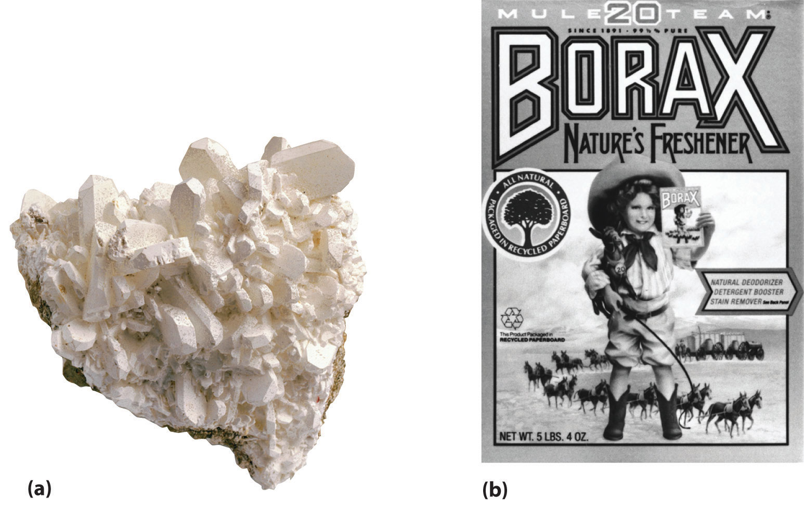(a) Concentrated deposits of crystalline borax [Na2B4O5(OH)4·8H2O] are found in ancient lake beds, such as the Mojave Desert and Death Valley in the western United States. (b) Borax is used in various cleaning products, including 20 Mule Team Borax, a laundry detergent named for the teams of 20 mules that hauled wagons full of borax from desert deposits to railroad terminals in the 1880s.
Pure, crystalline boron, however, is extremely difficult to obtain because of its high melting point (2300°C) and the highly corrosive nature of liquid boron. It is usually prepared by reducing pure BCl3 with hydrogen gas at high temperatures or by the thermal decomposition of boron hydrides such as diborane (B2H6):
Equation 22.3
Equation 22.4
B2H6(g) → 2B(s) + 3H2(g)The reaction shown in Equation 22.3 is used to prepare boron fibers, which are stiff and light. Hence they are used as structural reinforcing materials in objects as diverse as the US space shuttle and the frames of lightweight bicycles that are used in races such as the Tour de France. Boron is also an important component of many ceramics and heat-resistant borosilicate glasses, such as Pyrex, which is used for ovenware and laboratory glassware.
In contrast to boron, deposits of aluminum ores such as bauxite, a hydrated form of Al2O3, are abundant. With an electrical conductivity about twice that of copper on a weight for weight basis, aluminum is used in more than 90% of the overhead electric power lines in the United States. However, because aluminum–oxygen compounds are stable, obtaining aluminum metal from bauxite is an expensive process. Aluminum is extracted from oxide ores by treatment with a strong base, which produces the soluble hydroxide complex [Al(OH)4]−. Neutralization of the resulting solution with gaseous CO2 results in the precipitation of Al(OH)3:
Equation 22.5
2[Al(OH)4]−(aq) + CO2(g) → 2Al(OH)3(s) + CO32−(aq) + H2O(l)Thermal dehydration of Al(OH)3 produces Al2O3, and metallic aluminum is obtained by the electrolytic reduction of Al2O3 using the Hall–Heroult process described in Chapter 19 "Electrochemistry". Of the group 13 elements, only aluminum is used on a large scale: for example, each Boeing 777 airplane is about 50% aluminum by mass.
Source: Thomas D. Kelly and Grecia R. Matos, “Historical Statistics for Mineral and Material Commodities in the United States,” US Geological Survey Data Series 140, 2010, accessed July 20, 2011, http://pubs.usgs.gov/ds/2005/140/.
The other members of group 13 are rather rare: gallium is approximately 5000 times less abundant than aluminum, and indium and thallium are even scarcer. Consequently, these metals are usually obtained as by-products in the processing of other metals. The extremely low melting point of gallium (29.6°C), however, makes it easy to separate from aluminum. Due to its low melting point and high boiling point, gallium is used as a liquid in thermometers that have a temperature range of almost 2200°C. Indium and thallium, the heavier group 13 elements, are found as trace impurities in sulfide ores of zinc and lead. Indium is used as a crushable seal for high-vacuum cryogenic devices, and its alloys are used as low-melting solders in electronic circuit boards. Thallium, on the other hand, is so toxic that the metal and its compounds have few uses. Both indium and thallium oxides are released in flue dust when sulfide ores are converted to metal oxides and SO2. Until relatively recently, these and other toxic elements were allowed to disperse in the air, creating large “dead zones” downwind of a smelter. The flue dusts are now trapped and serve as a relatively rich source of elements such as In and Tl (as well as Ge, Cd, Te, and As).
Table 22.1 "Selected Properties of the Group 13 Elements" summarizes some important properties of the group 13 elements. Notice the large differences between boron and aluminum in size, ionization energy, electronegativity, and standard reduction potential, which is consistent with the observation that boron behaves chemically like a nonmetal and aluminum like a metal. All group 13 elements have ns2np1 valence electron configurations, and all tend to lose their three valence electrons to form compounds in the +3 oxidation state. The heavier elements in the group can also form compounds in the +1 oxidation state formed by the formal loss of the single np valence electron. Because the group 13 elements generally contain only six valence electrons in their neutral compounds, these compounds are all moderately strong Lewis acids.
Table 22.1 Selected Properties of the Group 13 Elements
| Property | Boron | Aluminum* | Gallium | Indium | Thallium |
|---|---|---|---|---|---|
| atomic symbol | B | Al | Ga | In | Tl |
| atomic number | 5 | 13 | 31 | 49 | 81 |
| atomic mass (amu) | 10.81 | 26.98 | 69.72 | 114.82 | 204.38 |
| valence electron configuration† | 2s22p1 | 3s23p1 | 4s24p1 | 5s25p1 | 6s26p1 |
| melting point/boiling point (°C) | 2075/4000 | 660/2519 | 29.7/2204 | 156.6/2072 | 304/1473 |
| density (g/cm3) at 25°C | 2.34 | 2.70 | 5.91 | 7.31 | 11.8 |
| atomic radius (pm) | 87 | 118 | 136 | 156 | 156 |
| first ionization energy (kJ/mol) | 801 | 578 | 579 | 558 | 589 |
| most common oxidation state | +3 | +3 | +3 | +3 | +1 |
| ionic radius (pm)‡ | −25 | 54 | 62 | 80 | 162 |
| electron affinity (kJ/mol) | −27 | −42 | −40 | −39 | −37 |
| electronegativity | 2.0 | 1.6 | 1.8 | 1.8 | 1.8 |
| standard reduction potential (E°, V) | −0.87 | −1.66 | −0.55 | −0.34 | +0.741 of M3+(aq) |
| product of reaction with O2 | B2O3 | Al2O3 | Ga2O3 | In2O3 | Tl2O |
| type of oxide | acidic | amphoteric | amphoteric | amphoteric | basic |
| product of reaction with N2 | BN | AlN | GaN | InN | none |
| product of reaction with X2§ | BX3 | Al2X6 | Ga2X6 | In2X6 | TlX |
| *This is the name used in the United States; the rest of the world inserts an extra i and calls it aluminium. | |||||
| †The configuration shown does not include filled d and f subshells. | |||||
| ‡The values cited are for six-coordinate ions in the most common oxidation state, except for Al3+, for which the value for the four-coordinate ion is given. The B3+ ion is not a known species; the radius cited is an estimated four-coordinate value. | |||||
| §X is Cl, Br, or I. Reaction with F2 gives the trifluorides (MF3) for all group 13 elements. | |||||
Neutral compounds of the group 13 elements are electron deficient, so they are generally moderately strong Lewis acids.
In contrast to groups 1 and 2, the group 13 elements show no consistent trends in ionization energies, electron affinities, and reduction potentials, whereas electronegativities actually increase from aluminum to thallium. Some of these anomalies, especially for the series Ga, In, Tl, can be explained by the increase in the effective nuclear charge (Zeff) that results from poor shielding of the nuclear charge by the filled (n − 1)d10 and (n − 2)f14 subshells. Consequently, although the actual nuclear charge increases by 32 as we go from indium to thallium, screening by the filled 5d and 4f subshells is so poor that Zeff increases significantly from indium to thallium. Thus the first ionization energy of thallium is actually greater than that of indium.
Anomalies in periodic trends among Ga, In, and Tl can be explained by the increase in the effective nuclear charge due to poor shielding.
Elemental boron is a semimetal that is remarkably unreactive; in contrast, the other group 13 elements all exhibit metallic properties and reactivity. We therefore consider the reactions and compounds of boron separately from those of other elements in the group.
All group 13 elements have fewer valence electrons than valence orbitals, which generally results in delocalized, metallic bonding. With its high ionization energy, low electron affinity, low electronegativity, and small size, however, boron does not form a metallic lattice with delocalized valence electrons. Instead, boron forms unique and intricate structures that contain multicenter bonds, in which a pair of electrons holds together three or more atoms.
Elemental boron forms multicenter bonds, whereas the other group 13 elements exhibit metallic bonding.
The basic building block of elemental boron is not the individual boron atom, as would be the case in a metal, but rather the B12 icosahedron. (For more information on B12, see Chapter 7 "The Periodic Table and Periodic Trends", Section 7.4 "The Chemical Families".) Because these icosahedra do not pack together very well, the structure of solid boron contains voids, resulting in its low density (Figure 22.2 "Solid Boron Contains B"). Elemental boron can be induced to react with many nonmetallic elements to give binary compounds that have a variety of applications. For example, plates of boron carbide (B4C) can stop a 30-caliber, armor-piercing bullet, yet they weigh 10%–30% less than conventional armor. Other important compounds of boron with nonmetals include boron nitride (BN), which is produced by heating boron with excess nitrogen (Equation 22.6); boron oxide (B2O3), which is formed when boron is heated with excess oxygen (Equation 22.7); and the boron trihalides (BX3), which are formed by heating boron with excess halogen (Equation 22.8).
Equation 22.6
Equation 22.7
Equation 22.8
Figure 22.2 Solid Boron Contains B12 Icosahedra
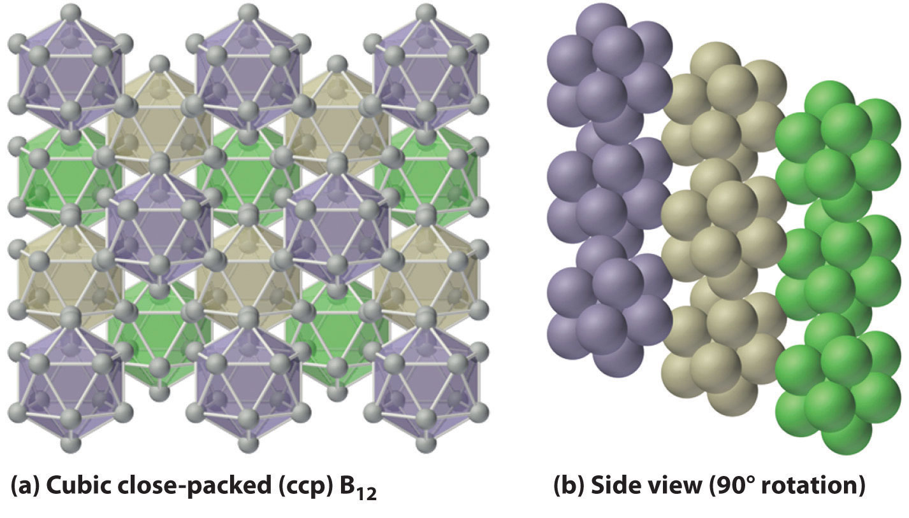Unlike metallic solids, elemental boron consists of a regular array of B12 icosahedra rather than individual boron atoms. Note that each boron atom in the B12 icosahedron is connected to five other boron atoms within the B12 unit. (a) The allotrope of boron with the simplest structure is α-rhombohedral boron, which consists of B12 octahedra in an almost cubic close-packed lattice. (b) A side view of the structure shows that icosahedra do not pack as efficiently as spheres, making the density of solid boron less than expected.
As is typical of elements lying near the dividing line between metals and nonmetals, many compounds of boron are amphoteric, dissolving in either acid or base.
Boron nitride is similar in many ways to elemental carbon. With eight electrons, the B–N unit is isoelectronic with the C–C unit, and B and N have the same average size and electronegativity as C. The most stable form of BN is similar to graphite, containing six-membered B3N3 rings arranged in layers. At high temperature and pressure, hexagonal BN converts to a cubic structure similar to diamond, which is one of the hardest substances known. Boron oxide (B2O3) contains layers of trigonal planar BO3 groups (analogous to BX3) in which the oxygen atoms bridge two boron atoms. It dissolves many metal and nonmetal oxides, including SiO2, to give a wide range of commercially important borosilicate glasses. A small amount of CoO gives the deep blue color characteristic of “cobalt blue” glass.
At high temperatures, boron also reacts with virtually all metals to give metal borides that contain regular three-dimensional networks, or clusters, of boron atoms. The structures of two metal borides—ScB12 and CaB6—are shown in Figure 22.3 "The Structures of ScB". Because metal-rich borides such as ZrB2 and TiB2 are hard and corrosion resistant even at high temperatures, they are used in applications such as turbine blades and rocket nozzles.
Figure 22.3 The Structures of ScB12 and CaB6, Two Boron-Rich Metal Borides
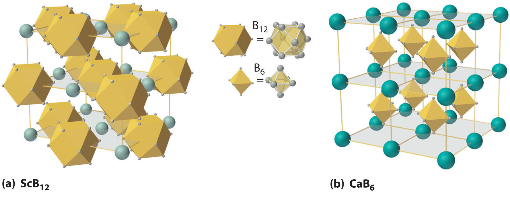(a) The structure of ScB12 consists of B12 clusters and Sc atoms arranged in a faced-centered cubic lattice similar to that of NaCl, with B12 units occupying the anion positions and scandium atoms the cation positions. The B12 units here are not icosahedra but cubooctahedra, with alternating square and triangular faces. (b) The structure of CaB6 consists of octahedral B6 clusters and calcium atoms arranged in a body-centered cubic lattice similar to that of CsCl, with B6 units occupying the anion positions and calcium atoms the cation positions.
Boron hydrides were not discovered until the early 20th century, when the German chemist Alfred Stock undertook a systematic investigation of the binary compounds of boron and hydrogen, although binary hydrides of carbon, nitrogen, oxygen, and fluorine have been known since the 18th century. Between 1912 and 1936, Stock oversaw the preparation of a series of boron–hydrogen compounds with unprecedented structures that could not be explained with simple bonding theories. All these compounds contain multicenter bonds, as discussed in Chapter 21 "Periodic Trends and the " (Figure 21.5 "A Three-Center Bond Uses Two Electrons to Link Three Atoms"). The simplest example is diborane (B2H6), which contains two bridging hydrogen atoms (part (a) in Figure 22.4 "The Structures of Diborane (B"). An extraordinary variety of polyhedral boron–hydrogen clusters is now known; one example is the B12H122− ion, which has a polyhedral structure similar to the icosahedral B12 unit of elemental boron, with a single hydrogen atom bonded to each boron atom.
Figure 22.4 The Structures of Diborane (B2H6) and Aluminum Chloride (Al2Cl6)
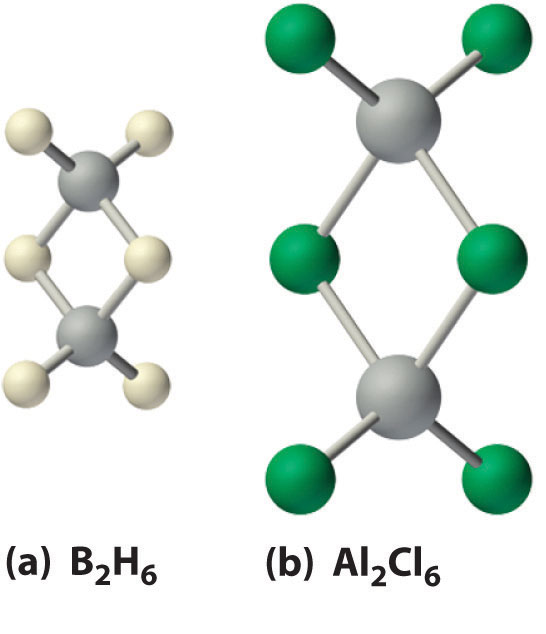(a) The hydrogen-bridged dimer B2H6 contains two three-center, two-electron bonds as described for the B2H7− ion in Figure 21.5 "A Three-Center Bond Uses Two Electrons to Link Three Atoms". (b) In contrast, the bonding in the halogen-bridged dimer Al2Cl6 can be described in terms of electron-pair bonds, in which a chlorine atom bonded to one aluminum atom acts as a Lewis base by donating a lone pair of electrons to another aluminum atom, which acts as a Lewis acid.
A related class of polyhedral clusters, the carboranes, contain both CH and BH units; an example is shown here. Replacing the hydrogen atoms bonded to carbon with organic groups produces substances with novel properties, some of which are currently being investigated for their use as liquid crystals and in cancer chemotherapy.
The enthalpy of combustion of diborane (B2H6) is −2165 kJ/mol, one of the highest values known:
Equation 22.9
Consequently, the US military explored using boron hydrides as rocket fuels in the 1950s and 1960s. This effort was eventually abandoned because boron hydrides are unstable, costly, and toxic, and, most important, B2O3 proved to be highly abrasive to rocket nozzles. Reactions carried out during this investigation, however, showed that boron hydrides exhibit unusual reactivity.
Because boron and hydrogen have almost identical electronegativities, the reactions of boron hydrides are dictated by minor differences in the distribution of electron density in a given compound. In general, two distinct types of reaction are observed: electron-rich species such as the BH4− ion are reductants, whereas electron-deficient species such as B2H6 act as oxidants.
For each reaction, explain why the given products form.
Given: balanced chemical equations
Asked for: why the given products form
Strategy:
Classify the type of reaction. Using periodic trends in atomic properties, thermodynamics, and kinetics, explain why the reaction products form.
Solution:
Exercise
Predict the products of the reactions and write a balanced chemical equation for each reaction.
Answer:
All four of the heavier group 13 elements (Al, Ga, In, and Tl) react readily with the halogens to form compounds with a 1:3 stoichiometry:
Equation 22.10
2M(s) + 3X2(s,l,g) → 2MX3(s) or M2X6The reaction of Tl with iodine is an exception: although the product has the stoichiometry TlI3, it is not thallium(III) iodide, but rather a thallium(I) compound, the Tl+ salt of the triiodide ion (I3−). This compound forms because iodine is not a powerful enough oxidant to oxidize thallium to the +3 oxidation state.
Of the halides, only the fluorides exhibit behavior typical of an ionic compound: they have high melting points (>950°C) and low solubility in nonpolar solvents. In contrast, the trichorides, tribromides, and triiodides of aluminum, gallium, and indium, as well as TlCl3 and TlBr3, are more covalent in character and form halogen-bridged dimers (part (b) in Figure 22.4 "The Structures of Diborane (B"). Although the structure of these dimers is similar to that of diborane (B2H6), the bonding can be described in terms of electron-pair bonds rather than the delocalized electron-deficient bonding found in diborane. Bridging halides are poor electron-pair donors, so the group 13 trihalides are potent Lewis acids that react readily with Lewis bases, such as amines, to form a Lewis acid–base adduct:
Equation 22.11
Al2Cl6(soln) + 2(CH3)3N(soln) → 2(CH3)3N:AlCl3(soln)In water, the halides of the group 13 metals hydrolyze to produce the metal hydroxide [M(OH)3]:
Equation 22.12
MX3(s) + 3H2O(l) → M(OH)3(s) + 3HX(aq)In a related reaction, Al2(SO4)3 is used to clarify drinking water by the precipitation of hydrated Al(OH)3, which traps particulates. The halides of the heavier metals (In and Tl) are less reactive with water because of their lower charge-to-radius ratio. Instead of forming hydroxides, they dissolve to form the hydrated metal complex ions: [M(H2O)6]3+.
Of the group 13 halides, only the fluorides behave as typical ionic compounds.
Group 13 trihalides are potent Lewis acids that react with Lewis bases to form a Lewis acid–base adduct.
Like boron (Equation 22.7), all the heavier group 13 elements react with excess oxygen at elevated temperatures to give the trivalent oxide (M2O3), although Tl2O3 is unstable:
Equation 22.13
Aluminum oxide (Al2O3), also known as alumina, is a hard, high-melting-point, chemically inert insulator used as a ceramic and as an abrasive in sandpaper and toothpaste. Replacing a small number of Al3+ ions in crystalline alumina with Cr3+ ions forms the gemstone ruby, whereas replacing Al3+ with a mixture of Fe2+, Fe3+, and Ti4+ produces blue sapphires. The gallium oxide compound MgGa2O4 gives the brilliant green light familiar to anyone who has ever operated a xerographic copy machine. All the oxides dissolve in dilute acid, but Al2O3 and Ga2O3 are amphoteric, which is consistent with their location along the diagonal line of the periodic table, also dissolving in concentrated aqueous base to form solutions that contain M(OH)4− ions.
Aluminum, gallium, and indium also react with the other group 16 elements (chalcogens) to form chalcogenides with the stoichiometry M2Y3. However, because Tl(III) is too strong an oxidant to form a stable compound with electron-rich anions such as S2−, Se2−, and Te2−, thallium forms only the thallium(I) chalcogenides with the stoichiometry Tl2Y. Only aluminum, like boron, reacts directly with N2 (at very high temperatures) to give AlN, which is used in transistors and microwave devices as a nontoxic heat sink because of its thermal stability; GaN and InN can be prepared using other methods. All the metals, again except Tl, also react with the heavier group 15 elements (pnicogens) to form the so-called III–V compounds, such as GaAs. These are semiconductors, whose electronic properties, such as their band gaps, differ from those that can be achieved using either pure or doped group 14 elements. (For more information on band gaps, see Chapter 12 "Solids", Section 12.6 "Bonding in Metals and Semiconductors".) For example, nitrogen- and phosphorus-doped gallium arsenide (GaAs1−x−yPxNy) is used in the displays of calculators and digital watches.
All group 13 oxides dissolve in dilute acid, but Al2O3 and Ga2O3 are amphoteric.
Unlike boron, the heavier group 13 elements do not react directly with hydrogen. Only the aluminum and gallium hydrides are known, but they must be prepared indirectly; AlH3 is an insoluble, polymeric solid that is rapidly decomposed by water, whereas GaH3 is unstable at room temperature.
Boron has a relatively limited tendency to form complexes, but aluminum, gallium, indium, and, to some extent, thallium form many complexes. Some of the simplest are the hydrated metal ions [M(H2O)63+], which are relatively strong Brønsted–Lowry acids that can lose a proton to form the M(H2O)5(OH)2+ ion:
Equation 22.14
[M(H2O)6]3+(aq) → M(H2O)5(OH)2+(aq) + H+(aq)Group 13 metal ions also form stable complexes with species that contain two or more negatively charged groups, such as the oxalate ion. The stability of such complexes increases as the number of coordinating groups provided by the ligand increases.
For each reaction, explain why the given products form.
Given: balanced chemical equations
Asked for: why the given products form
Strategy:
Classify the type of reaction. Using periodic trends in atomic properties, thermodynamics, and kinetics, explain why the reaction products form.
Solution:
Exercise
Predict the products of the reactions and write a balanced chemical equation for each reaction.
Answer:
Isolation of the group 13 elements requires a large amount of energy because compounds of the group 13 elements with oxygen are thermodynamically stable. Boron behaves chemically like a nonmetal, whereas its heavier congeners exhibit metallic behavior. Many of the inconsistencies observed in the properties of the group 13 elements can be explained by the increase in Zeff that arises from poor shielding of the nuclear charge by the filled (n − 1)d10 and (n − 2)f14 subshells. Instead of forming a metallic lattice with delocalized valence electrons, boron forms unique aggregates that contain multicenter bonds, including metal borides, in which boron is bonded to other boron atoms to form three-dimensional networks or clusters with regular geometric structures. All neutral compounds of the group 13 elements are electron deficient and behave like Lewis acids. The trivalent halides of the heavier elements form halogen-bridged dimers that contain electron-pair bonds, rather than the delocalized electron-deficient bonds characteristic of diborane. Their oxides dissolve in dilute acid, although the oxides of aluminum and gallium are amphoteric. None of the group 13 elements reacts directly with hydrogen, and the stability of the hydrides prepared by other routes decreases as we go down the group. In contrast to boron, the heavier group 13 elements form a large number of complexes in the +3 oxidation state.
None of the group 13 elements was isolated until the early 19th century, even though one of these elements is the most abundant metal on Earth. Explain why the discovery of these elements came so late and describe how they were finally isolated.
Boron and aluminum exhibit very different chemistry. Which element forms complexes with the most ionic character? Which element is a metal? a semimetal? What single property best explains the difference in their reactivity?
The usual oxidation state of boron and aluminum is +3, whereas the heavier elements in group 13 have an increasing tendency to form compounds in the +1 oxidation state. Given that all group 13 elements have an ns2np1 electron configuration, how do you explain this difference between the lighter and heavier group 13 elements?
Do you expect the group 13 elements to be highly reactive in air? Why or why not?
Which of the group 13 elements has the least metallic character? Explain why.
Boron forms multicenter bonds rather than metallic lattices with delocalized valence electrons. Why does it prefer this type of bonding? Does this explain why boron behaves like a semiconductor rather than a metal? Explain your answer.
Because the B–N unit is isoelectronic with the C–C unit, compounds that contain these units tend to have similar chemistry, although they exhibit some important differences. Describe the differences in physical properties, conductivity, and reactivity of these two types of compounds.
Boron has a strong tendency to form clusters. Does aluminum have this same tendency? Why or why not?
Explain why a B–O bond is much stronger than a B–C bond.
The electron affinities of boron and aluminum are −27 and −42 kJ/mol, respectively. Contrary to the usual periodic trends, the electron affinities of the remaining elements in group 13 are between those of B and Al. How do you explain this apparent anomaly?
The reduction potentials of B and Al in the +3 oxidation state are −0.87 V and −1.66 V, respectively. Do you expect the reduction potentials of the remaining elements of group 13 to be greater than or less than these values? How do you explain the differences between the expected values and those given in Table 22.1 "Selected Properties of the Group 13 Elements"?
The compound Al2Br6 is a halide-bridged dimer in the vapor phase, similar to diborane (B2H6). Draw the structure of Al2Br6 and then compare the bonding in this compound with that found in diborane. Explain the differences.
The compound AlH3 is an insoluble, polymeric solid that reacts with strong Lewis bases, such as Me3N, to form adducts with 10 valence electrons around aluminum. What hybrid orbital set is formed to allow this to occur?
The high stability of compounds of the group 13 elements with oxygen required powerful reductants such as metallic potassium to be isolated. Al and B were initially prepared by reducing molten AlCl3 and B2O3, respectively, with potassium.
Due to its low electronegativity and small size, boron is an unreactive semimetal rather than a metal.
The B–N bond is significantly more polar than the C–C bond, which makes B–N compounds more reactive and generally less stable than the corresponding carbon compounds. Increased polarity results in less delocalization and makes the planar form of BN less conductive than graphite.
Partial pi bonding between O and B increases the B–O bond strength.
Periodic trends predict that the cations of the heavier elements should be easier to reduce, so the elements should have less negative reduction potentials. In fact, the reverse is observed because the heavier elements have anomalously high Zeff values due to poor shielding by filled (n − 1)d and (n − 2)f subshells.
dsp 3
Is B(OH)3 a strong or a weak acid? Using bonding arguments, explain why.
Using bonding arguments, explain why organoaluminum compounds are expected to be potent Lewis acids that react rapidly with weak Lewis bases.
Imagine that you are studying chemistry prior to the discovery of gallium, element 31. Considering its position in the periodic table, predict the following properties of gallium:
The halides of Al, Ga, In, and Tl dissolve in water to form acidic solutions containing the hydrated metal ions, but only the halides of aluminum and gallium dissolve in aqueous base to form soluble metal-hydroxide complexes. Show the formulas of the soluble metal–hydroxide complexes and of the hydrated metal ions. Explain the difference in their reactivities.
Complete and balance each chemical equation.
Complete and balance each chemical equation.
Write a balanced chemical equation for each reaction.
Write a balanced chemical equation for the reaction that occurs between Al and each species.
Write a balanced chemical equation that shows how you would prepare each compound from its respective elements or other common compounds.
Write a balanced chemical equation that shows how you would prepare each compound from its respective elements or other common compounds.
Diborane is a spontaneously flammable, toxic gas that is prepared by reacting NaBH4 with BF3. Write a balanced chemical equation for this reaction.
Draw the Lewis electron structure of each reactant and product in each chemical equation. Then describe the type of bonding found in each reactant and product.
Draw the Lewis electron structure of each reactant and product in each chemical equation. Then describe the type of bonding found in each reactant and product.
B12(s) + 18Cl2(g) → 12BCl3(l)
BCl3(l) + 3H2O(l) → B(OH)3(aq) + 3HCl(aq)
The elements of group 14 show a greater range of chemical behavior than any other family in the periodic table. Three of the five elements—carbon, tin, and lead—have been known since ancient times. For example, some of the oldest known writings are Egyptian hieroglyphics written on papyrus with ink made from lampblack, a finely divided carbon soot produced by the incomplete combustion of hydrocarbons (Figure 22.5 "Very Small Particles of Noncrystalline Carbon Are Used to Make Black Ink"). Activated carbon is an even more finely divided form of carbon that is produced from the thermal decomposition of organic materials, such as sawdust. Because it adsorbs many organic and sulfur-containing compounds, activated carbon is used to decolorize foods, such as sugar, and to purify gases and wastewater.
Figure 22.5 Very Small Particles of Noncrystalline Carbon Are Used to Make Black Ink
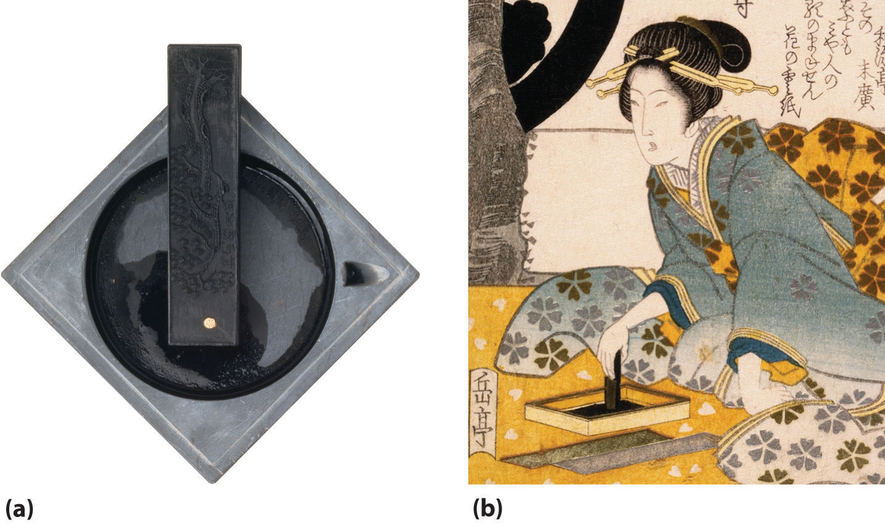(a) Since ancient times, ink sticks have been the major source of black ink in Asia. Plant oils or resinous woods such as pine are burned, and the resulting soot (lampblack) is collected, mixed with binders such as animal glues and minerals, compressed into a solid stick, and allowed to dry. Liquid ink is made by rubbing the ink stick against the surface of a special stone ink dish with small amounts of water. (b) A 19th-century Japanese painting illustrates how ink is made from an ink stick.
Tin and lead oxides and sulfides are easily reduced to the metal by heating with charcoal, a discovery that must have occurred by accident when prehistoric humans used rocks containing their ores for a cooking fire. However, because tin and copper ores are often found together in nature, their alloy—bronze—was probably discovered before either element, a discovery that led to the Bronze Age. The heaviest element in group 14, lead, is such a soft and malleable metal that the ancient Romans used thin lead foils as writing tablets, as well as lead cookware and lead pipes for plumbing. (Recall that the atomic symbols for tin and lead come from their Latin names: Sn for stannum and Pb for plumbum.)
Although the first glasses were prepared from silica (silicon oxide, SiO2) around 1500 BC, elemental silicon was not prepared until 1824 because of its high affinity for oxygen. Jöns Jakob Berzelius was finally able to obtain amorphous silicon by reducing Na2SiF6 with molten potassium. The crystalline element, which has a shiny blue-gray luster, was not isolated until 30 yr later. The last member of the group 14 elements to be discovered was germanium, which was found in 1886 in a newly discovered silver-colored ore by the German chemist Clemens Winkler, who named the element in honor of his native country.
The natural abundance of the group 14 elements varies tremendously. Elemental carbon, for example, ranks only 17th on the list of constituents of Earth’s crust. Pure graphite is obtained by reacting coke, an amorphous form of carbon used as a reductant in the production of steel, with silica to give silicon carbide (SiC). This is then thermally decomposed at very high temperatures (2700°C) to give graphite:
Equation 22.15
Equation 22.16
One allotrope of carbon, diamond, is metastable under normal conditions, with a of 2.9 kJ/mol versus graphite. At pressures greater than 50,000 atm, however, the diamond structure is favored and is the most stable form of carbon. Because the structure of diamond is more compact than that of graphite, its density is significantly higher (3.51 g/cm3 versus 2.2 g/cm3). Because of its high thermal conductivity, diamond powder is used to transfer heat in electronic devices.
The most common sources of diamonds on Earth are ancient volcanic pipes that contain a rock called kimberlite, a lava that solidified rapidly from deep inside the Earth. Most kimberlite formations, however, are much newer than the diamonds they contain. In fact, the relative amounts of different carbon isotopes in diamond show that diamond is a chemical and geological “fossil” older than our solar system, which means that diamonds on Earth predate the existence of our sun. Thus diamonds were most likely created deep inside Earth from primordial grains of graphite present when Earth was formed (part (a) in Figure 22.6 "Crystalline Samples of Carbon and Silicon, the Lightest Group 14 Elements"). Gem-quality diamonds can now be produced synthetically and have chemical, optical, and physical characteristics identical to those of the highest-grade natural diamonds.
Figure 22.6 Crystalline Samples of Carbon and Silicon, the Lightest Group 14 Elements
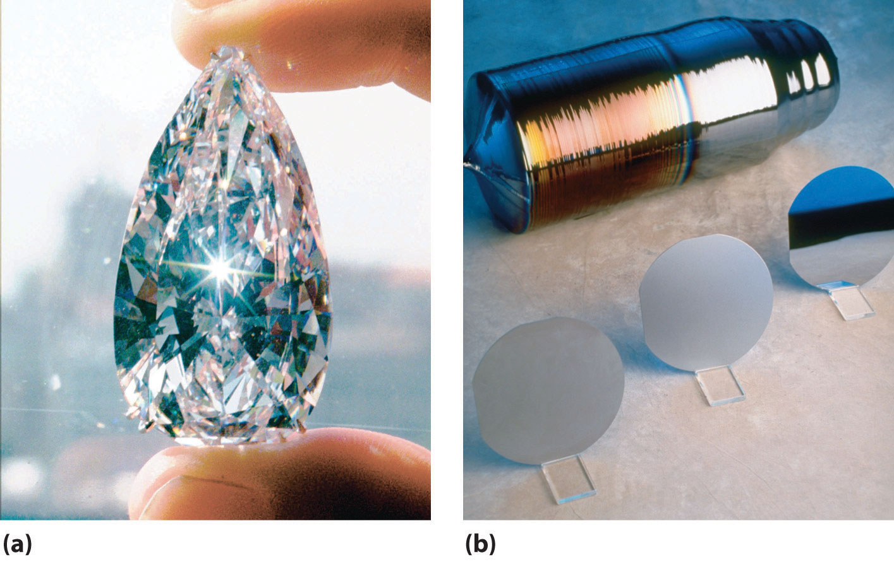(a) The 78.86-carat Ahmadabad diamond, a historic Indian gem purchased in Gujarat in the 17th century by the French explorer Jean-Baptiste Tavernier and sold in 1995 for $4.3 million, is a rare example of a large single crystal of diamond, the less-stable allotrope of carbon. (b) Large single crystals of highly purified silicon are the basis of the modern electronics industry. They are sliced into very thin wafers that are highly polished and then cut into smaller pieces for use as chips.
Although oxygen is the most abundant element on Earth, the next most abundant is silicon, the next member of group 14. Pure silicon is obtained by reacting impure silicon with Cl2 to give SiCl4, followed by the fractional distillation of the impure SiCl4 and reduction with H2:
Equation 22.17
Several million tons of silicon are annually produced with this method. Amorphous silicon containing residual amounts of hydrogen is used in photovoltaic devices that convert light to electricity, and silicon-based solar cells are used to power pocket calculators, boats, and highway signs, where access to electricity by conventional methods is difficult or expensive. Ultrapure silicon and germanium form the basis of the modern electronics industry (part (b) in Figure 22.6 "Crystalline Samples of Carbon and Silicon, the Lightest Group 14 Elements").
In contrast to silicon, the concentrations of germanium and tin in Earth’s crust are only 1–2 ppm. The concentration of lead, which is the end product of the nuclear decay of many radionuclides, is 13 ppm, making lead by far the most abundant of the heavy group 14 elements. (For more information on radionuclides, see Chapter 20 "Nuclear Chemistry".) No concentrated ores of germanium are known; like indium, germanium is generally recovered from flue dusts obtained by processing the ores of metals such as zinc. Because germanium is essentially transparent to infrared radiation, it is used in optical devices.
Tin and lead are soft metals that are too weak for structural applications, but because tin is flexible, corrosion resistant, and nontoxic, it is used as a coating in food packaging. A “tin can,” for example, is actually a steel can whose interior is coated with a thin layer (1–2 µm) of metallic tin. Tin is also used in superconducting magnets and low-melting-point alloys such as solder and pewter. Pure lead is obtained by heating galena (PbS) in air and reducing the oxide (PbO) to the metal with carbon, followed by electrolytic deposition to increase the purity:
Equation 22.18
Equation 22.19
or
Equation 22.20
By far the single largest use of lead is in lead storage batteries. (For more information on batteries, see Chapter 19 "Electrochemistry".)
As you learned in Chapter 7 "The Periodic Table and Periodic Trends", the group 14 elements all have ns2np2 valence electron configurations. All form compounds in which they formally lose either the two np and the two ns valence electrons or just the two np valence electrons, giving a +4 or +2 oxidation state, respectively. Because covalent bonds decrease in strength with increasing atomic size and the ionization energies for the heavier elements of the group are higher than expected due to a higher Zeff, the relative stability of the +2 oxidation state increases smoothly from carbon to lead.
The relative stability of the +2 oxidation state increases, and the tendency to form catenated compounds decreases, from carbon to lead in group 14.
Recall that many carbon compounds contain multiple bonds formed by π overlap of singly occupied 2p orbitals on adjacent atoms. (For more information on atomic orbitals, see Chapter 9 "Molecular Geometry and Covalent Bonding Models".) Compounds of silicon, germanium, tin, and lead with the same stoichiometry as those of carbon, however, tend to have different structures and properties. For example, CO2 is a gas that contains discrete O=C=O molecules, whereas the most common form of SiO2 is the high-melting solid known as quartz, the major component of sand. Instead of discrete SiO2 molecules, quartz contains a three-dimensional network of silicon atoms that is similar to the structure of diamond but with an oxygen atom inserted between each pair of silicon atoms. Thus each silicon atom is linked to four other silicon atoms by bridging oxygen atoms. (For more information on the properties of solids, see Chapter 12 "Solids", Section 12.1 "Crystalline and Amorphous Solids".) The tendency to catenate—to form chains of like atoms—decreases rapidly as we go down group 14 because bond energies for both the E–E and E–H bonds decrease with increasing atomic number (where E is any group 14 element). Consequently, inserting a CH2 group into a linear hydrocarbon such as n-hexane is exergonic (ΔG° = −45 kJ/mol), whereas inserting an SiH2 group into the silicon analogue of n-hexane (Si6H14) actually costs energy (ΔG° ≈ +25 kJ/mol). As a result of this trend, the thermal stability of catenated compounds decreases rapidly from carbon to lead.
In Table 22.2 "Selected Properties of the Group 14 Elements" we see, once again, that there is a large difference between the lightest element (C) and the others in size, ionization energy, and electronegativity. As in group 13, the second and third elements (Si and Ge) are similar, and there is a reversal in the trends for some properties, such as ionization energy, between the fourth and fifth elements (Sn and Pb). As for group 13, these effects can be explained by the presence of filled (n − 1)d and (n − 2)f subshells, whose electrons are relatively poor at screening the outermost electrons from the higher nuclear charge.
Table 22.2 Selected Properties of the Group 14 Elements
| Property | Carbon | Silicon | Germanium | Tin | Lead |
|---|---|---|---|---|---|
| atomic symbol | C | Si | Ge | Sn | Pb |
| atomic number | 6 | 14 | 32 | 50 | 82 |
| atomic mass (amu) | 12.01 | 28.09 | 72.64 | 118.71 | 207.2 |
| valence electron configuration* | 2s22p2 | 3s23p2 | 4s24p2 | 5s25p2 | 6s26p2 |
| melting point/boiling point (°C) | 4489 (at 10.3 MPa)/3825 | 1414/3265 | 939/2833 | 232/2602 | 327/1749 |
| density (g/cm3) at 25°C | 2.2 (graphite), 3.51 (diamond) | 2.33 | 5.32 | 7.27(white) | 11.30 |
| atomic radius (pm) | 77 (diamond) | 111 | 125 | 145 | 154 |
| first ionization energy (kJ/mol) | 1087 | 787 | 762 | 709 | 716 |
| most common oxidation state | +4 | +4 | +4 | +4 | +4 |
| ionic radius (pm)† | ≈29 | ≈40 | 53 | 69 | 77.5 |
| electron affinity (kJ/mol) | −122 | −134 | −119 | −107 | −35 |
| electronegativity | 2.6 | 1.9 | 2.0 | 2.0 | 1.8 |
| standard reduction potential (E°, V) (for EO2 → E in acidic solution) | 0.21 | −0.86 | −0.18 | −0.12 | 0.79 |
| product of reaction with O2 | CO2, CO | SiO2 | GeO2 | SnO2 | PbO |
| type of oxide | acidic (CO2) | acidic neutral (CO) | amphoteric | amphoteric | amphoteric |
| product of reaction with N2 | none | Si3N4 | none | Sn3N4 | none |
| product of reaction with X2‡ | CX4 | SiX4 | GeX4 | SnX4 | PbX2 |
| product of reaction with H2 | CH4 | none | none | none | none |
| *The configuration shown does not include filled d and f subshells. | |||||
| †The values cited are for six-coordinate +4 ions in the most common oxidation state, except for C4+ and Si4+, for which values for the four-coordinate ion are estimated. | |||||
| ‡X is Cl, Br, or I. Reaction with F2 gives the tetrafluorides (EF4) for all group 14 elements, where E represents any group 14 element. | |||||
The group 14 elements follow the same pattern as the group 13 elements in their periodic properties.
Carbon is the building block of all organic compounds, including biomolecules, fuels, pharmaceuticals, and plastics, whereas inorganic compounds of carbon include metal carbonates, which are found in substances as diverse as fertilizers and antacid tablets, halides, oxides, carbides, and carboranes. Like boron in group 13, the chemistry of carbon differs sufficiently from that of its heavier congeners to merit a separate discussion.
The structures of the allotropes of carbon—diamond, graphite, fullerenes, and nanotubes—are distinct, but they all contain simple electron-pair bonds (Figure 7.18 "Four Allotropes of Carbon"). Although it was originally believed that fullerenes were a new form of carbon that could be prepared only in the laboratory, fullerenes have been found in certain types of meteorites. Another possible allotrope of carbon has also been detected in impact fragments of a carbon-rich meteorite; it appears to consist of long chains of carbon atoms linked by alternating single and triple bonds, (–C≡C–C≡C–)n. Carbon nanotubes (“buckytubes”) are being studied as potential building blocks for ultramicroscale detectors and molecular computers and as tethers for space stations. They are currently used in electronic devices, such as the electrically conducting tips of miniature electron guns for flat-panel displays in portable computers.
Although all the carbon tetrahalides (CX4) are known, they are generally not obtained by the direct reaction of carbon with the elemental halogens (X2) but by indirect methods such as the following reaction, where X is Cl or Br:
Equation 22.21
CH4(g) + 4X2(g) → CX4(l,s) + 4HX(g)The carbon tetrahalides all have the tetrahedral geometry predicted by the valence-shell electron-pair repulsion (VSEPR) model, as shown for CCl4 and CI4. Their stability decreases rapidly as the halogen increases in size because of poor orbital overlap and increased crowding. Because the C–F bond is about 25% stronger than a C–H bond, fluorocarbons are thermally and chemically more stable than the corresponding hydrocarbons, while having a similar hydrophobic character. A polymer of tetrafluoroethylene (F2C=CF2), analogous to polyethylene, is the nonstick Teflon lining found on many cooking pans, and similar compounds are used to make fabrics stain resistant (such as Scotch-Gard) or waterproof but breathable (such as Gore-Tex).
The stability of the carbon tetrahalides decreases with increasing size of the halogen due to increasingly poor orbital overlap and crowding.
Carbon reacts with oxygen to form either CO or CO2, depending on the stoichiometry. Carbon monoxide is a colorless, odorless, and poisonous gas that reacts with the iron in hemoglobin to form an Fe–CO unit, which prevents hemoglobin from binding, transporting, and releasing oxygen in the blood (see Figure 23.26 "Binding of O" for myoglobin). In the laboratory, carbon monoxide can be prepared on a small scale by dehydrating formic acid with concentrated sulfuric acid:
Equation 22.22
Carbon monoxide also reacts with the halogens to form the oxohalides (COX2). Probably the best known of these is phosgene (Cl2C=O), which is highly poisonous and was used as a chemical weapon during World War I:
Equation 22.23
Despite its toxicity, phosgene is an important industrial chemical that is prepared on a large scale, primarily in the manufacture of polyurethanes.
Carbon dioxide can be prepared on a small scale by reacting almost any metal carbonate or bicarbonate salt with a strong acid. As is typical of a nonmetal oxide, CO2 reacts with water to form acidic solutions containing carbonic acid (H2CO3). In contrast to its reactions with oxygen, reacting carbon with sulfur at high temperatures produces only carbon disulfide (CS2):
Equation 22.24
The selenium analogue CSe2 is also known. Both have the linear structure predicted by the VSEPR model, and both are vile smelling (and in the case of CSe2, highly toxic), volatile liquids. The sulfur and selenium analogues of carbon monoxide, CS and CSe, are unstable because the C≡Y bonds (Y is S or Se) are much weaker than the C≡O bond due to poorer π orbital overlap.
Pi bonds between carbon and the heavier chalcogenides are weak due to poor orbital overlap.
Binary compounds of carbon with less electronegative elements are called carbides. The chemical and physical properties of carbides depend strongly on the identity of the second element, resulting in three general classes: ionic carbides, interstitial carbides, and covalent carbides. The reaction of carbon at high temperatures with electropositive metals such as those of groups 1 and 2 and aluminum produces ionic carbides, which contain discrete metal cations and carbon anions. The identity of the anions depends on the size of the second element. For example, smaller elements such as beryllium and aluminum give methides such as Be2C and Al4C3, which formally contain the C4− ion derived from methane (CH4) by losing all four H atoms as protons. In contrast, larger metals such as sodium and calcium give carbides with stoichiometries of Na2C2 and CaC2. Because these carbides contain the C4− ion, which is derived from acetylene (HC≡CH) by losing both H atoms as protons, they are more properly called acetylides. As discussed in Chapter 21 "Periodic Trends and the ", Section 21.4 "The Alkaline Earth Metals (Group 2)", reacting ionic carbides with dilute aqueous acid results in protonation of the anions to give the parent hydrocarbons: CH4 or C2H2. For many years, miners’ lamps used the reaction of calcium carbide with water to produce a steady supply of acetylene, which was ignited to provide a portable lantern.
19th-century miner’s lamp. The lamp uses burning acetylene, produced by the slow reaction of calcium carbide with water, to provide light.
The reaction of carbon with most transition metals at high temperatures produces interstitial carbides. Due to the less electropositive nature of the transition metals, these carbides contain covalent metal–carbon interactions, which result in different properties: most interstitial carbides are good conductors of electricity, have high melting points, and are among the hardest substances known. Interstitial carbides exhibit a variety of nominal compositions, and they are often nonstoichiometric compounds whose carbon content can vary over a wide range. Among the most important are tungsten carbide (WC), which is used industrially in high-speed cutting tools, and cementite (Fe3C), which is a major component of steel.
Elements with an electronegativity similar to that of carbon form covalent carbides, such as silicon carbide (SiC; Equation 22.15) and boron carbide (B4C). These substances are extremely hard, have high melting points, and are chemically inert. For example, silicon carbide is highly resistant to chemical attack at temperatures as high as 1600°C. Because it also maintains its strength at high temperatures, silicon carbide is used in heating elements for electric furnaces and in variable-temperature resistors.
Carbides formed from group 1 and 2 elements are ionic. Transition metals form interstitial carbides with covalent metal–carbon interactions, and covalent carbides are chemically inert.
For each reaction, explain why the given product forms.
Given: balanced chemical equations
Asked for: why the given products form
Strategy:
Classify the type of reaction. Using periodic trends in atomic properties, thermodynamics, and kinetics, explain why the observed reaction products form.
Solution:
Exercise
Predict the products of the reactions and write a balanced chemical equation for each reaction.
Answer:
Although silicon, germanium, tin, and lead in their +4 oxidation states often form binary compounds with the same stoichiometry as carbon, the structures and properties of these compounds are usually significantly different from those of the carbon analogues. Silicon and germanium are both semiconductors with structures analogous to diamond. Tin has two common allotropes: white (β) tin has a metallic lattice and metallic properties, whereas gray (α) tin has a diamond-like structure and is a semiconductor. The metallic β form is stable above 13.2°C, and the nonmetallic α form is stable below 13.2°C. Lead is the only group 14 element that is metallic in both structure and properties under all conditions.
Based on its position in the periodic table, we expect silicon to be amphoteric. In fact, it dissolves in strong aqueous base to produce hydrogen gas and solutions of silicates, but the only aqueous acid that it reacts with is hydrofluoric acid, presumably due to the formation of the stable SiF62− ion. Germanium is more metallic in its behavior than silicon. For example, it dissolves in hot oxidizing acids, such as HNO3 and H2SO4, but in the absence of an oxidant, it does not dissolve in aqueous base. Although tin has an even more metallic character than germanium, lead is the only element in the group that behaves purely as a metal. Acids do not readily attack it because the solid acquires a thin protective outer layer of a Pb2+ salt, such as PbSO4.
All group 14 dichlorides are known, and their stability increases dramatically as the atomic number of the central atom increases. Thus CCl2 is dichlorocarbene, a highly reactive, short-lived intermediate that can be made in solution but cannot be isolated in pure form using standard techniques; SiCl2 can be isolated at very low temperatures, but it decomposes rapidly above −150°C, and GeCl2 is relatively stable at temperatures below 20°C. In contrast, SnCl2 is a polymeric solid that is indefinitely stable at room temperature, whereas PbCl2 is an insoluble crystalline solid with a structure similar to that of SnCl2.
The stability of the group 14 dichlorides increases dramatically from carbon to lead.
Although the first four elements of group 14 form tetrahalides (MX4) with all the halogens, only fluorine is able to oxidize lead to the +4 oxidation state, giving PbF4. The tetrahalides of silicon and germanium react rapidly with water to give amphoteric oxides (where M is Si or Ge):
Equation 22.25
MX4(s,l) + 2H2O(l) → MO2(s) + 4HX(aq)In contrast, the tetrahalides of tin and lead react with water to give hydrated metal ions.
Because of the stability of its +2 oxidation state, lead reacts with oxygen or sulfur to form PbO or PbS, respectively, whereas heating the other group 14 elements with excess O2 or S8 gives the corresponding dioxides or disulfides, respectively. The dioxides of the group 14 elements become increasingly basic as we go down the group.
The dioxides of the group 14 elements become increasingly basic down the group.
Because the Si–O bond is even stronger than the C–O bond (∼452 kJ/mol versus ∼358 kJ/mol), silicon has a strong affinity for oxygen. The relative strengths of the C–O and Si–O bonds contradict the generalization that bond strengths decrease as the bonded atoms become larger. This is because we have thus far assumed that a formal single bond between two atoms can always be described in terms of a single pair of shared electrons. In the case of Si–O bonds, however, the presence of relatively low-energy, empty d orbitals on Si and nonbonding electron pairs in the p or spn hybrid orbitals of O results in a partial π bond (Figure 22.7 "Pi Bonding between Silicon and Oxygen"). Due to its partial π double bond character, the Si–O bond is significantly stronger and shorter than would otherwise be expected. A similar interaction with oxygen is also an important feature of the chemistry of the elements that follow silicon in the third period (P, S, and Cl). Because the Si–O bond is unusually strong, silicon–oxygen compounds dominate the chemistry of silicon.
Figure 22.7 Pi Bonding between Silicon and Oxygen
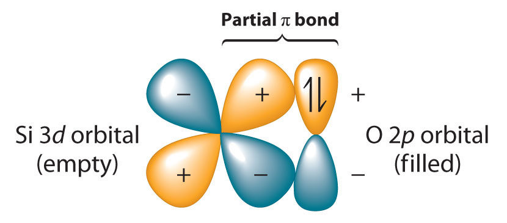Silicon has relatively low-energy, empty 3d orbitals that can interact with filled 2p hybrid orbitals on oxygen. This interaction results in a partial π bond in which both electrons are supplied by oxygen, giving the Si–O bond partial double bond character and making it significantly stronger (and shorter) than expected for a single bond.
Because silicon–oxygen bonds are unusually strong, silicon–oxygen compounds dominate the chemistry of silicon.
Compounds with anions that contain only silicon and oxygen are called silicates, whose basic building block is the SiO44− unit:

The number of oxygen atoms shared between silicon atoms and the way in which the units are linked vary considerably in different silicates. Converting one of the oxygen atoms from terminal to bridging generates chains of silicates, while converting two oxygen atoms from terminal to bridging generates double chains. In contrast, converting three or four oxygens to bridging generates a variety of complex layered and three-dimensional structures, respectively.

Opal gemstones.
The silicates include many glasses as well as the gemstone known as opal, which typically contains 10%–15% water. In a large and important class of materials called aluminosilicates, some of the Si atoms are replaced by Al atoms to give aluminosilicates such as zeolites, whose three-dimensional framework structures have large cavities connected by smaller tunnels (Figure 22.8 "Zeolites Are Aluminosilicates with Large Cavities Connected by Channels"). Because the cations in zeolites are readily exchanged, zeolites are used in laundry detergents as water-softening agents: the more loosely bound Na+ ions inside the zeolite cavities are displaced by the more highly charged Mg2+ and Ca2+ ions present in hard water, which bind more tightly. Zeolites are also used as catalysts and for water purification.
Figure 22.8 Zeolites Are Aluminosilicates with Large Cavities Connected by Channels
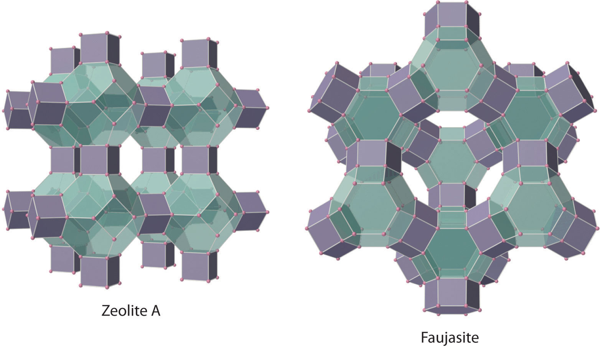The cavities normally contain hydrated cations that are loosely bound to the oxygen atoms of the negatively charged framework by electrostatic interactions. The sizes and arrangements of the channels and cavities differ in different types of zeolites. For example, in zeolite A the aluminosilicate cages are arranged in a cubic fashion, and the channels connecting the cavities intersect at right angles. In contrast, the cavities in faujasite are much larger, and the channels intersect at 120° angles. In these idealized models, the oxygen atoms that connect each pair of silicon atoms have been omitted.
Silicon and germanium react with nitrogen at high temperature to form nitrides (M3N4):
Equation 22.26
3Si(l) + 2N2(g) → Si3N4(s)Silicon nitride has properties that make it suitable for high-temperature engineering applications: it is strong, very hard, and chemically inert, and it retains these properties to temperatures of about 1000°C.
Because of the diagonal relationship between boron and silicon, metal silicides and metal borides exhibit many similarities. Although metal silicides have structures that are as complex as those of the metal borides and carbides, few silicides are structurally similar to the corresponding borides due to the significantly larger size of Si (atomic radius 111 pm versus 87 pm for B). Silicides of active metals, such as Mg2Si, are ionic compounds that contain the Si4− ion. They react with aqueous acid to form silicon hydrides such as SiH4:
Equation 22.27
Mg2Si(s) + 4H+(aq) → 2Mg2+(aq) + SiH4(g)Unlike carbon, catenated silicon hydrides become thermodynamically less stable as the chain lengthens. Thus straight-chain and branched silanes (analogous to alkanes) are known up to only n = 10; the germanium analogues (germanes) are known up to n = 9. In contrast, the only known hydride of tin is SnH4, and it slowly decomposes to elemental Sn and H2 at room temperature. The simplest lead hydride (PbH4) is so unstable that chemists are not even certain it exists. Because E=E and E≡E bonds become weaker with increasing atomic number (where E is any group 14 element), simple silicon, germanium, and tin analogues of alkenes, alkynes, and aromatic hydrocarbons are either unstable (Si=Si and Ge=Ge) or unknown. Silicon-based life-forms are therefore likely to be found only in science fiction.
The stability of group 14 hydrides decreases down the group, and E=E and E≡E bonds become weaker.
The only important organic derivatives of lead are compounds such as tetraethyllead [(CH3CH2)4Pb]. Because the Pb–C bond is weak, these compounds decompose at relatively low temperatures to produce alkyl radicals (R·), which can be used to control the rate of combustion reactions. For 60 yr, hundreds of thousands of tons of lead were burned annually in automobile engines, producing a mist of lead oxide particles along the highways that constituted a potentially serious public health problem. (Example 6 in Section 22.3 "The Elements of Group 15 (The Pnicogens)" examines this problem.) The use of catalytic converters reduced the amount of carbon monoxide, nitrogen oxides, and hydrocarbons released into the atmosphere through automobile exhausts, but it did nothing to decrease lead emissions. Because lead poisons catalytic converters, however, its use as a gasoline additive has been banned in most of the world.
Compounds that contain Si–C and Si–O bonds are stable and important. High-molecular-mass polymers called silicones contain an (Si–O–)n backbone with organic groups attached to Si (Figure 22.9 "Silicones Are Polymers with Long Chains of Alternating Silicon and Oxygen Atoms"). The properties of silicones are determined by the chain length, the type of organic group, and the extent of cross-linking between the chains. Without cross-linking, silicones are waxes or oils, but cross-linking can produce flexible materials used in sealants, gaskets, car polishes, lubricants, and even elastic materials, such as the plastic substance known as Silly Putty.
Figure 22.9 Silicones Are Polymers with Long Chains of Alternating Silicon and Oxygen Atoms
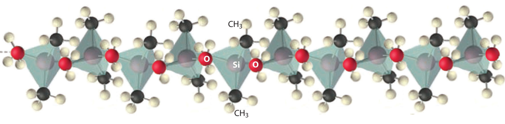The structure of a linear silicone polymer is similar to that of quartz, but two of the oxygen atoms attached to each silicon atom are replaced by the carbon atoms of organic groups, such as the methyl groups (–CH3) shown here. The terminal silicon atoms are bonded to three methyl groups. Silicones can be oily, waxy, flexible, or elastic, depending on the chain length, the extent of cross-linking between the chains, and the type of organic group.
A child playing with Silly Putty, a silicone polymer with unusual mechanical properties. Gentle pressure causes Silly Putty to flow or stretch, but it cannot be flattened when hit with a hammer.
For each reaction, explain why the given products form.
Given: balanced chemical equations
Asked for: why the given products form
Strategy:
Classify the type of reaction. Using periodic trends in atomic properties, thermodynamics, and kinetics, explain why the observed reaction products form.
Solution:
Exercise
Predict the products of the reactions and write a balanced chemical equation for each reaction.
Answer:
The group 14 elements show the greatest range of chemical behavior of any group in the periodic table. Because the covalent bond strength decreases with increasing atomic size and greater-than-expected ionization energies due to an increase in Zeff, the stability of the +2 oxidation state increases from carbon to lead. The tendency to form multiple bonds and to catenate decreases as the atomic number increases. The stability of the carbon tetrahalides decreases as the halogen increases in size because of poor orbital overlap and steric crowding. Carbon forms three kinds of carbides with less electronegative elements: ionic carbides, which contain metal cations and C4− (methide) or C22− (acetylide) anions; interstitial carbides, which are characterized by covalent metal–carbon interactions and are among the hardest substances known; and covalent carbides, which have three-dimensional covalent network structures that make them extremely hard, high melting, and chemically inert. Consistent with periodic trends, metallic behavior increases down the group. Silicon has a tremendous affinity for oxygen because of partial Si–O π bonding. Dioxides of the group 14 elements become increasingly basic down the group and their metallic character increases. Silicates contain anions that consist of only silicon and oxygen. Aluminosilicates are formed by replacing some of the Si atoms in silicates by Al atoms; aluminosilicates with three-dimensional framework structures are called zeolites. Nitrides formed by reacting silicon or germanium with nitrogen are strong, hard, and chemically inert. The hydrides become thermodynamically less stable down the group. Moreover, as atomic size increases, multiple bonds between or to the group 14 elements become weaker. Silicones, which contain an Si–O backbone and Si–C bonds, are high-molecular-mass polymers whose properties depend on their compositions.
Why is the preferred oxidation state of lead +2 rather than +4? What do you expect the preferred oxidation state of silicon to be based on its position in the periodic table?
Carbon uses pπ–pπ overlap to form compounds with multiple bonds, but silicon does not. Why? How does this same phenomenon explain why the heavier elements in group 14 do not form catenated compounds?
Diamond is both an electrical insulator and an excellent thermal conductor. Explain this property in terms of its bonding.
The lighter chalcogens (group 16) form π bonds with carbon. Does the strength of these π bonds increase or decrease with increasing atomic number of the chalcogen? Why?
The heavier group 14 elements can form complexes that contain expanded coordination spheres. How does this affect their reactivity compared with the reactivity of carbon? Is this a thermodynamic effect or a kinetic effect? Explain your answer.
Refer to Table 22.2 "Selected Properties of the Group 14 Elements" for the values of the electron affinities of the group 14 elements. Explain any discrepancies between these actual values and the expected values based on usual periodic trends.
Except for carbon, the elements of group 14 can form five or six electron-pair bonds. What hybrid orbitals are used to allow this expanded coordination? Why does carbon not form more than four electron-pair bonds?
Which of the group 14 elements is least stable in the +4 oxidation state? Why?
Predict the products of each reaction and balance each chemical equation.
Write a balanced chemical equation to indicate how you would prepare each compound.
Write a balanced chemical equation to indicate how you would prepare each compound.
Like the group 14 elements, the lightest member of group 15, nitrogen, is found in nature as the free element, and the heaviest elements have been known for centuries because they are easily isolated from their ores.
Antimony (Sb) was probably the first of the pnicogens to be obtained in elemental form and recognized as an element. Its atomic symbol comes from its Roman name: stibium. It is found in stibnite (Sb2S3), a black mineral that has been used as a cosmetic (an early form of mascara) since biblical times, and it is easily reduced to the metal in a charcoal fire (Figure 22.10 "The Ancient Egyptians Used Finely Ground Antimony Sulfide for Eye Makeup"). The Egyptians used antimony to coat copper objects as early as the third millennium BC, and antimony is still used in alloys to improve the tonal quality of bells.
Figure 22.10 The Ancient Egyptians Used Finely Ground Antimony Sulfide for Eye Makeup
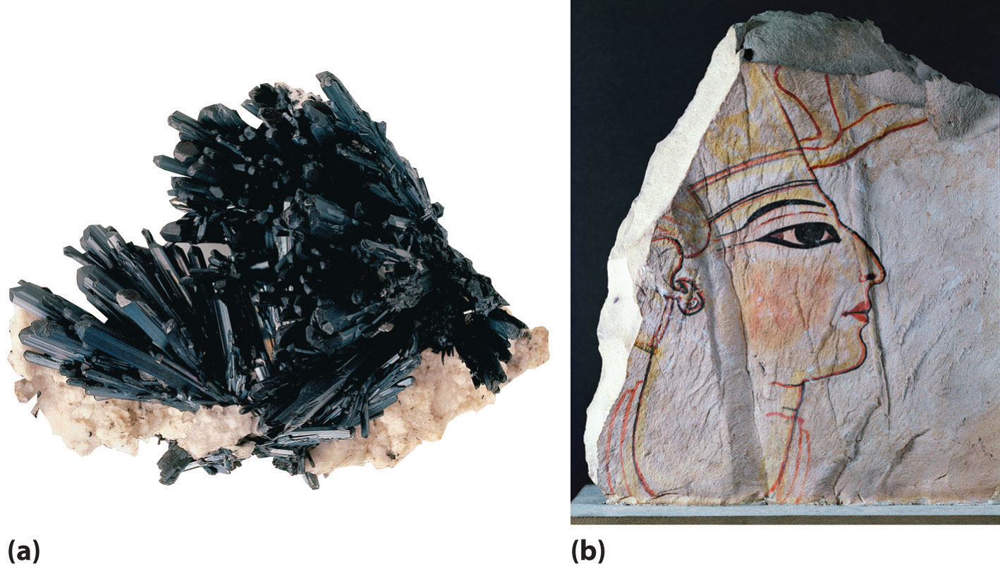(a) Crystals of the soft black mineral stibnite (Sb2S3) on a white mineral matrix. (b) A fragment of an Egyptian painting on limestone from the 16th–13th centuries BC shows the use of ground stibnite (“kohl”) as black eye shadow. Small vases of ground stibnite have been found among the funeral goods buried with Egyptian pharaohs.
In the form of its yellow sulfide ore, orpiment (As2S3), arsenic (As) has been known to physicians and professional assassins since ancient Greece, although elemental arsenic was not isolated until centuries later. The history of bismuth (Bi), in contrast, is more difficult to follow because early alchemists often confused it with other metals, such as lead, tin, antimony, and even silver (due to its slightly pinkish-white luster). Its name comes from the old German wismut, meaning “white metal.” Bismuth was finally isolated in the 15th century, and it was used to make movable type for printing shortly after the invention of the Gutenberg printing process in 1440. Bismuth is used in printing because it is one of the few substances known whose solid state is less dense than the liquid. Consequently, its alloys expand as they cool, filling a mold completely and producing crisp, clear letters for typesetting.
Phosphorus was discovered in 1669 by the German alchemist Hennig Brandt, who was looking for the “philosophers’ stone,” a mythical substance capable of converting base metals to silver or gold. Believing that human urine was the source of the key ingredient, Brandt obtained several dozen buckets of urine, which he allowed to putrefy. The urine was distilled to dryness at high temperature and then condensed; the last fumes were collected under water, giving a waxy white solid that had unusual properties. For example, it glowed in the dark and burst into flames when removed from the water. (Unfortunately for Brandt, however, it did not turn lead into gold.) The element was given its current name (from the Greek phos, meaning “light,” and phoros, meaning “bringing”) in the 17th century. For more than a century, the only way to obtain phosphorus was the distillation of urine, but in 1769 it was discovered that phosphorus could be obtained more easily from bones. During the 19th century, the demand for phosphorus for matches was so great that battlefields and paupers’ graveyards were systematically scavenged for bones. Early matches were pieces of wood coated with elemental phosphorus that were stored in an evacuated glass tube and ignited when the tube was broken (which could cause unfortunate accidents if the matches were kept in a pocket!).
Unfortunately, elemental phosphorus is volatile and highly toxic. It is absorbed by the teeth and destroys bone in the jaw, leading to a painful and fatal condition called “phossy jaw,” which for many years was accepted as an occupational hazard of working in the match industry.
Although nitrogen is the most abundant element in the atmosphere, it was the last of the pnicogens to be obtained in pure form. In 1772, Daniel Rutherford, working with Joseph Black (who discovered CO2), noticed that a gas remained when CO2 was removed from a combustion reaction. Antoine Lavoisier called the gas azote, meaning “no life,” because it did not support life. When it was discovered that the same element was also present in nitric acid and nitrate salts such as KNO3 (nitre), it was named nitrogen. About 90% of the nitrogen produced today is used to provide an inert atmosphere for processes or reactions that are oxygen sensitive, such as the production of steel, petroleum refining, and the packaging of foods and pharmaceuticals.
Because the atmosphere contains several trillion tons of elemental nitrogen with a purity of about 80%, it is a huge source of nitrogen gas. Distillation of liquefied air yields nitrogen gas that is more than 99.99% pure, but small amounts of very pure nitrogen gas can be obtained from the thermal decomposition of sodium azide:
Equation 22.28
In contrast, Earth’s crust is relatively poor in nitrogen. The only important nitrogen ores are large deposits of KNO3 and NaNO3 in the deserts of Chile and Russia, which were apparently formed when ancient alkaline lakes evaporated. Consequently, virtually all nitrogen compounds produced on an industrial scale use atmospheric nitrogen as the starting material. Phosphorus, which constitutes only about 0.1% of Earth’s crust, is much more abundant in ores than nitrogen. Like aluminum and silicon, phosphorus is always found in combination with oxygen, and large inputs of energy are required to isolate it.
The other three pnicogens are much less abundant: arsenic is found in Earth’s crust at a concentration of about 2 ppm, antimony is an order of magnitude less abundant, and bismuth is almost as rare as gold. All three elements have a high affinity for the chalcogens and are usually found as the sulfide ores (M2S3), often in combination with sulfides of other heavy elements, such as copper, silver, and lead. Hence a major source of antimony and bismuth is flue dust obtained by smelting the sulfide ores of the more abundant metals.
In group 15, as elsewhere in the p block, we see large differences between the lightest element (N) and its congeners in size, ionization energy, electron affinity, and electronegativity (Table 22.3 "Selected Properties of the Group 15 Elements"). The chemical behavior of the elements can be summarized rather simply: nitrogen and phosphorus behave chemically like nonmetals, arsenic and antimony behave like semimetals, and bismuth behaves like a metal. With their ns2np3 valence electron configurations, all form compounds by losing either the three np valence electrons to form the +3 oxidation state or the three np and the two ns valence electrons to give the +5 oxidation state, whose stability decreases smoothly from phosphorus to bismuth. In addition, the relatively large magnitude of the electron affinity of the lighter pnicogens enables them to form compounds in the −3 oxidation state (such as NH3 and PH3), in which three electrons are formally added to the neutral atom to give a filled np subshell. Nitrogen has the unusual ability to form compounds in nine different oxidation states, including −3, +3, and +5. Because neutral covalent compounds of the trivalent pnicogens contain a lone pair of electrons on the central atom, they tend to behave as Lewis bases.
Table 22.3 Selected Properties of the Group 15 Elements
| Property | Nitrogen | Phosphorus | Arsenic | Antimony | Bismuth |
|---|---|---|---|---|---|
| atomic symbol | N | P | As | Sb | Bi |
| atomic number | 7 | 15 | 33 | 51 | 83 |
| atomic mass (amu) | 14.01 | 30.97 | 74.92 | 121.76 | 209.98 |
| valence electron configuration* | 2s22p3 | 3s23p3 | 4s24p3 | 5s25p3 | 6s26p3 |
| melting point/boiling point (°C) | −210/−196 | 44.15/281c | 817 (at 3.70 MPa)/603 (sublimes)† | 631/1587 | 271/1564 |
| density (g/cm3) at 25°C | 1.15 | 1.82† | 5.75‡ | 6.68 | 9.79 |
| atomic radius (pm) | 56 | 98 | 114 | 133 | 143 |
| first ionization energy (kJ/mol) | 1402 | 1012 | 945 | 831 | 703 |
| common oxidation state(s) | −3 to +5 | +5, +3, −3 | +5, +3 | +5, +3 | +3 |
| ionic radius (pm)§ | 146 (−3), 16 (+3) | 212 (−3), 44 (+3) | 58 (+3) | 76 (+3), 60 (+5) | 103 (+3) |
| electron affinity (kJ/mol) | 0 | −72 | −78 | −101 | −91 |
| electronegativity | 3.0 | 2.2 | 2.2 | 2.1 | 1.9 |
| standard reduction potential (E°, V) (EV → EIII in acidic solution)|| | +0.93 | −0.28 | +0.56 | +0.65 | — |
| product of reaction with O2 | NO2, NO | P4O6, P4O10 | As4O6 | Sb2O5 | Bi2O3 |
| type of oxide | acidic (NO2), neutral (NO, N2O) | acidic | acidic | amphoteric | basic |
| product of reaction with N2 | — | none | none | none | none |
| product of reaction with X2 | none | PX3, PX5 | AsF5, AsX3 | SbF5, SbCl5, SbBr3, SbI3 | BiF5, BiX3 |
| product of reaction with H2 | none | none | none | none | none |
| *The configuration shown does not include filled d and f subshells. | |||||
| †For white phosphorus. | |||||
| ‡For gray arsenic. | |||||
| §The values cited are for six-coordinate ions in the indicated oxidation states. The N5+, P5+, and As5+ ions are not known species. | |||||
| ||The chemical form of the elements in these oxidation states varies considerably. For N, the reaction is NO3− + 3H+ + 2e− → HNO2 + H2O; for P and As, it is H3EO4 + 2H+ + 2e− → H3EO3 + H2O; and for Sb it is Sb2O5 + 4e− + 10H+ → 2Sb3+ + 5H2O. | |||||
In group 15, the stability of the +5 oxidation state decreases from P to Bi.
Because neutral covalent compounds of the trivalent group 15 elements have a lone pair of electrons on the central atom, they tend to be Lewis bases.
Like carbon, nitrogen has four valence orbitals (one 2s and three 2p), so it can participate in at most four electron-pair bonds by using sp3 hybrid orbitals. Unlike carbon, however, nitrogen does not form long chains because of repulsive interactions between lone pairs of electrons on adjacent atoms. These interactions become important at the shorter internuclear distances encountered with the smaller, second-period elements of groups 15, 16, and 17. (For more information on internuclear distance, see Chapter 7 "The Periodic Table and Periodic Trends", Section 7.2 "Sizes of Atoms and Ions" and Chapter 8 "Ionic versus Covalent Bonding", Section 8.2 "Ionic Bonding".) Stable compounds with N–N bonds are limited to chains of no more than three N atoms, such as the azide ion (N3−).
Nitrogen is the only pnicogen that normally forms multiple bonds with itself and other second-period elements, using π overlap of adjacent np orbitals. Thus the stable form of elemental nitrogen is N2, whose N≡N bond is so strong (DN≡N = 942 kJ/mol) compared with the N–N and N=N bonds (DN–N = 167 kJ/mol; DN=N = 418 kJ/mol) that all compounds containing N–N and N=N bonds are thermodynamically unstable with respect to the formation of N2. In fact, the formation of the N≡N bond is so thermodynamically favored that virtually all compounds containing N–N bonds are potentially explosive.
Again in contrast to carbon, nitrogen undergoes only two important chemical reactions at room temperature: it reacts with metallic lithium to form lithium nitride, and it is reduced to ammonia by certain microorganisms. (For more information lithium, see Chapter 21 "Periodic Trends and the ".) At higher temperatures, however, N2 reacts with more electropositive elements, such as those in group 13, to give binary nitrides, which range from covalent to ionic in character. Like the corresponding compounds of carbon, binary compounds of nitrogen with oxygen, hydrogen, or other nonmetals are usually covalent molecular substances.
Few binary molecular compounds of nitrogen are formed by direct reaction of the elements. At elevated temperatures, N2 reacts with H2 to form ammonia, with O2 to form a mixture of NO and NO2, and with carbon to form cyanogen (N≡C–C≡N); elemental nitrogen does not react with the halogens or the other chalcogens. Nonetheless, all the binary nitrogen halides (NX3) are known. Except for NF3, all are toxic, thermodynamically unstable, and potentially explosive, and all are prepared by reacting the halogen with NH3 rather than N2. Both nitrogen monoxide (NO) and nitrogen dioxide (NO2) are thermodynamically unstable, with positive free energies of formation. Unlike NO, NO2 reacts readily with excess water, forming a 1:1 mixture of nitrous acid (HNO2) and nitric acid (HNO3):
Equation 22.29
2NO2(g) + H2O(l) → HNO2(aq) + HNO3(aq)Nitrogen also forms N2O (dinitrogen monoxide, or nitrous oxide), a linear molecule that is isoelectronic with CO2 and can be represented as −N=N+=O. Like the other two oxides of nitrogen, nitrous oxide is thermodynamically unstable. The structures of the three common oxides of nitrogen are as follows:
Few binary molecular compounds of nitrogen are formed by the direct reaction of the elements.
At elevated temperatures, nitrogen reacts with highly electropositive metals to form ionic nitrides, such as Li3N and Ca3N2. These compounds consist of ionic lattices formed by Mn+ and N3− ions. Just as boron forms interstitial borides and carbon forms interstitial carbides, with less electropositive metals nitrogen forms a range of interstitial nitrides, in which nitrogen occupies holes in a close-packed metallic structure. Like the interstitial carbides and borides, these substances are typically very hard, high-melting materials that have metallic luster and conductivity.
Nitrogen also reacts with semimetals at very high temperatures to produce covalent nitrides, such as Si3N4 and BN, which are solids with extended covalent network structures similar to those of graphite or diamond. Consequently, they are usually high melting and chemically inert materials.
Ammonia (NH3) is one of the few thermodynamically stable binary compounds of nitrogen with a nonmetal. It is not flammable in air, but it burns in an O2 atmosphere:
Equation 22.30
4NH3(g) + 3O2(g) → 2N2(g) + 6H2O(g)About 10% of the ammonia produced annually is used to make fibers and plastics that contain amide bonds, such as nylons and polyurethanes, while 5% is used in explosives, such as ammonium nitrate, TNT (trinitrotoluene), and nitroglycerine. Large amounts of anhydrous liquid ammonia are used as fertilizer.
Nitrogen forms two other important binary compounds with hydrogen. Hydrazoic acid (HN3), also called hydrogen azide, is a colorless, highly toxic, and explosive substance. Hydrazine (N2H4) is also potentially explosive; it is used as a rocket propellant and to inhibit corrosion in boilers.
B, C, and N all react with transition metals to form interstitial compounds that are hard, high-melting materials.
For each reaction, explain why the given products form when the reactants are heated.
Given: balanced chemical equations
Asked for: why the given products form
Strategy:
Classify the type of reaction. Using periodic trends in atomic properties, thermodynamics, and kinetics, explain why the observed reaction products form.
Solution:
Exercise
Predict the product(s) of each reaction and write a balanced chemical equation for each reaction.
Answer:
Like the heavier elements of group 14, the heavier pnicogens form catenated compounds that contain only single bonds, whose stability decreases rapidly as we go down the group. For example, phosphorus exists as multiple allotropes, the most common of which is white phosphorus, which consists of P4 tetrahedra and behaves like a typical nonmetal. As is typical of a molecular solid, white phosphorus is volatile, has a low melting point (44.1°C), and is soluble in nonpolar solvents. It is highly strained, with bond angles of only 60°, which partially explains why it is so reactive and so easily converted to more stable allotropes. Heating white phosphorus for several days converts it to red phosphorus, a polymer that is air stable, virtually insoluble, denser than white phosphorus, and higher melting, properties that make it much safer to handle. A third allotrope of phosphorus, black phosphorus, is prepared by heating the other allotropes under high pressure; it is even less reactive, denser, and higher melting than red phosphorus. As expected from their structures, white phosphorus is an electrical insulator, and red and black phosphorus are semiconductors. The three heaviest pnicogens—arsenic, antimony, and bismuth—all have a metallic luster, but they are brittle (not ductile) and relatively poor electrical conductors.
As in group 14, the heavier group 15 elements form catenated compounds that contain only single bonds, whose stability decreases as we go down the group.
The reactivity of the heavier pnicogens decreases as we go down the column. Phosphorus is by far the most reactive of the pnicogens, forming binary compounds with every element in the periodic table except antimony, bismuth, and the noble gases. Phosphorus reacts rapidly with O2, whereas arsenic burns in pure O2 if ignited, and antimony and bismuth react with O2 only when heated. None of the pnicogens reacts with nonoxidizing acids such as aqueous HCl, but all dissolve in oxidizing acids such as HNO3. Only bismuth behaves like a metal, dissolving in HNO3 to give the hydrated Bi3+ cation.
The reactivity of the heavier group 15 elements decreases as we go down the column.
The heavier pnicogens can use energetically accessible 3d, 4d, or 5d orbitals to form dsp3 or d2sp3 hybrid orbitals for bonding. Consequently, these elements often have coordination numbers of 5 or higher. Phosphorus and arsenic form halides (e.g., AsCl5) that are generally covalent molecular species and behave like typical nonmetal halides, reacting with water to form the corresponding oxoacids (in this case, H3AsO4). All the pentahalides are potent Lewis acids that can expand their coordination to accommodate the lone pair of a Lewis base:
Equation 22.31
AsF5(soln) + F−(soln) → AsF6−(soln)In contrast, bismuth halides have extended lattice structures and dissolve in water to produce hydrated ions, consistent with the stronger metallic character of bismuth.
Except for BiF3, which is essentially an ionic compound, the trihalides are volatile covalent molecules with a lone pair of electrons on the central atom. Like the pentahalides, the trihalides react rapidly with water. In the cases of phosphorus and arsenic, the products are the corresponding acids, H3PO3 and H3AsO3, where E is P or As:
Equation 22.32
EX3(l) + 3H2O(l) → H3EO3(aq) + 3HX(aq)Phosphorus halides are also used to produce insecticides, flame retardants, and plasticizers.
With energetically accessible d orbitals, phosphorus and, to a lesser extent, arsenic are able to form π bonds with second-period atoms such as N and O. This effect is even more important for phosphorus than for silicon, resulting in very strong P–O bonds and even stronger P=O bonds. The first four elements in group 15 also react with oxygen to produce the corresponding oxide in the +3 oxidation state. Of these oxides, P4O6 and As4O6 have cage structures formed by inserting an oxygen atom into each edge of the P4 or As4 tetrahedron (part (a) in Figure 22.11 "The Structures of Some Cage Compounds of Phosphorus"), and they behave like typical nonmetal oxides. For example, P4O6 reacts with water to form phosphorous acid (H3PO3). Consistent with its position between the nonmetal and metallic oxides, Sb4O6 is amphoteric, dissolving in either acid or base. In contrast, Bi2O3 behaves like a basic metallic oxide, dissolving in acid to give solutions that contain the hydrated Bi3+ ion. The two least metallic elements of the heavier pnicogens, phosphorus and arsenic, form very stable oxides with the formula E4O10 in the +5 oxidation state (part (b) in Figure 22.11 "The Structures of Some Cage Compounds of Phosphorus"). In contrast, Bi2O5 is so unstable that there is no absolute proof it exists.
Figure 22.11 The Structures of Some Cage Compounds of Phosphorus

(a, b) The structures of P4O6 and P4O10 are both derived from the structure of white phosphorus (P4) by inserting an oxygen atom into each of the six edges of the P4 tetrahedron; P4O10 contains an additional terminal oxygen atom bonded to each phosphorus atom. (c) The structure of P4S3 is also derived from the structure of P4 by inserting three sulfur atoms into three adjacent edges of the tetrahedron.
The heavier pnicogens form sulfides that range from molecular species with three-dimensional cage structures, such as P4S3 (part (c) in Figure 22.11 "The Structures of Some Cage Compounds of Phosphorus"), to layered or ribbon structures, such as Sb2S3 and Bi2S3, which are semiconductors. Reacting the heavier pnicogens with metals produces substances whose properties vary with the metal content. Metal-rich phosphides (such as M4P) are hard, high-melting, electrically conductive solids with a metallic luster, whereas phosphorus-rich phosphides (such as MP15) are lower melting and less thermally stable because they contain catenated Pn units. Many organic or organometallic compounds of the heavier pnicogens containing one to five alkyl or aryl groups are also known. Because of the decreasing strength of the pnicogen–carbon bond, their thermal stability decreases from phosphorus to bismuth.
Phosphorus has the greatest ability to form π bonds with elements such as O, N, and C.
The thermal stability of organic or organometallic compounds of group 15 decreases down the group due to the decreasing strength of the pnicogen–carbon bond.
For each reaction, explain why the given products form.
Given: balanced chemical equations
Asked for: why the given products form
Strategy:
Classify the type of reaction. Using periodic trends in atomic properties, thermodynamics, and kinetics, explain why the reaction products form.
Solution:
Exercise
Predict the products of each reaction and write a balanced chemical equation for each reaction.
Answer:
In group 15, nitrogen and phosphorus behave chemically like nonmetals, arsenic and antimony behave like semimetals, and bismuth behaves like a metal. Nitrogen forms compounds in nine different oxidation states. The stability of the +5 oxidation state decreases from phosphorus to bismuth because of the inert-pair effect. Due to their higher electronegativity, the lighter pnicogens form compounds in the −3 oxidation state. Because of the presence of a lone pair of electrons on the pnicogen, neutral covalent compounds of the trivalent pnicogens are Lewis bases. Nitrogen does not form stable catenated compounds because of repulsions between lone pairs of electrons on adjacent atoms, but it does form multiple bonds with other second-period atoms. Nitrogen reacts with electropositive elements to produce solids that range from covalent to ionic in character. Reaction with electropositive metals produces ionic nitrides, reaction with less electropositive metals produces interstitial nitrides, and reaction with semimetals produces covalent nitrides. The reactivity of the pnicogens decreases with increasing atomic number. Compounds of the heavier pnicogens often have coordination numbers of 5 or higher and use dsp3 or d2sp3 hybrid orbitals for bonding. Because phosphorus and arsenic have energetically accessible d orbitals, these elements form π bonds with second-period atoms such as O and N. Phosphorus reacts with metals to produce phosphides. Metal-rich phosphides are hard, high-melting, electrically conductive solids with metallic luster, whereas phosphorus-rich phosphides, which contain catenated phosphorus units, are lower melting and less thermally stable.
Nitrogen is the first diatomic molecule in the second period of elements. Why is N2 the most stable form of nitrogen? Draw its Lewis electron structure. What hybrid orbitals are used to describe the bonding in this molecule? Is the molecule polar?
The polymer (SN)n has metallic luster and conductivity. Are the constituent elements in this polymer metals or nonmetals? Why does the polymer have metallic properties?
Except for NF3, all the halides of nitrogen are unstable. Explain why NF3 is stable.
Which of the group 15 elements forms the most stable compounds in the +3 oxidation state? Explain why.
Phosphorus and arsenic react with the alkali metals to produce salts with the composition M3Z11. Compare these products with those produced by reaction of P and As with the alkaline earth metals. What conclusions can you draw about the types of structures favored by the heavier elements in this part of the periodic table?
PF3 reacts with F2 to produce PF5, which in turn reacts with F− to give salts that contain the PF6− ion. In contrast, NF3 does not react with F2, even under extreme conditions; NF5 and the NF6− ion do not exist. Why?
Red phosphorus is safer to handle than white phosphorus, reflecting their dissimilar properties. Given their structures, how do you expect them to compare with regard to reactivity, solubility, density, and melting point?
Bismuth oxalate [Bi2(C2O4)3] is a poison. Draw its structure and then predict its solubility in H2O, dilute HCl, and dilute HNO3. Predict its combustion products. Suggest a method to prepare bismuth oxalate from bismuth.
Small quantities of NO can be obtained in the laboratory by reaction of the iodide ion with acidic solutions of nitrite. Write a balanced chemical equation that represents this reaction.
Although pure nitrous acid is unstable, dilute solutions in water are prepared by adding nitrite salts to aqueous acid. Write a balanced chemical equation that represents this type of reaction.
Metallic versus nonmetallic behavior becomes apparent in reactions of the elements with an oxidizing acid, such as HNO3. Write balanced chemical equations for the reaction of each element of group 15 with nitric acid. Based on the products, predict which of these elements, if any, are metals and which, if any, are nonmetals.
Predict the product(s) of each reaction and then balance each chemical equation.
Write a balanced chemical equation to show how you would prepare each compound.
NaNO2(s) + HCl(aq) → HNO2(aq) + NaCl(aq)
The chalcogens are the first group in the p block to have no stable metallic elements. All isotopes of polonium (Po), the only metal in group 16, are radioactive, and only one element in the group, tellurium (Te), can even be described as a semimetal. As in groups 14 and 15, the lightest element of group 16, oxygen, is found in nature as the free element.
Of the group 16 elements, only sulfur was known in ancient times; the others were not discovered until the late 18th and 19th centuries. Sulfur is frequently found as yellow crystalline deposits of essentially pure S8 in areas of intense volcanic activity or around hot springs. As early as the 15th century BC, sulfur was used as a fumigant in Homeric Greece because, when burned, it produces SO2 fumes that are toxic to most organisms, including vermin hiding in the walls and under the floors of houses. Hence references to sulfur are common in ancient literature, frequently in the context of religious purification. In fact, the association of sulfur with the divine was so pervasive that the prefixes thio- (meaning “sulfur”) and theo- (meaning “god”) have the same root in ancient Greek. Though used primarily in the production of sulfuric acid, sulfur is also used to manufacture gunpowder and as a cross-linking agent for rubber, which enables rubber to hold its shape but retain its flexibility.
Group 16 is the first group in the p block with no stable metallic elements.
Oxygen was not discovered until 1771, when the Swedish pharmacist Carl Wilhelm Scheele found that heating compounds such as KNO3, Ag2CO3, and HgO produced a colorless, odorless gas that supported combustion better than air. The results were not published immediately, however, so Scheele’s work remained unknown until 1777. Unfortunately, this was nearly two years after a paper by the English chemist Joseph Priestley had been published, describing the isolation of the same gas by using a magnifying glass to focus the sun’s rays on a sample of HgO. Oxygen is used primarily in the steel industry during the conversion of crude iron to steel using the Bessemer process. (For more information on the Bessemer process, see Chapter 23 "The ".) Another important industrial use of oxygen is in the production of TiO2, which is commonly used as a white pigment in paints, paper, and plastics.
A crystalline sulfur deposit. This sulfur deposit is located around a volcanic vent in Kilauea Crater, Hawaii.
Tellurium was discovered accidentally in 1782 by the Austrian chemist Franz Joseph Müller von Reichenstein, the chief surveyor of mines in Transylvania who was also responsible for the analysis of ore samples. The silvery-white metal had the same density as antimony but very different properties. Because it was difficult to analyze, Müller called it metallum problematicum (meaning “difficult metal”). The name tellurium (from the Latin tellus, meaning “earth”) was coined by another Austrian chemist, Martin Klaproth, who demonstrated in 1798 that Müller’s “difficult metal” was actually a new element. Tellurium is used to color glass and ceramics, in the manufacture of blasting caps, and in thermoelectric devices.
Selenium (Se) was first isolated in 1817 by the Swedish chemist Jöns Jakob Berzelius, who also discovered silicon. He had invested money in a sulfuric acid plant and decided to investigate a foul-smelling contaminant that formed a red precipitate. Although he initially thought the contaminant was tellurium, further study showed that it was actually a new element similar to tellurium. To emphasize the similarities, Berzelius named the new element selenium (after the Greek selene, meaning “moon”). Selenium is used primarily as a minor ingredient to decolorize glass. Because it is photosensitive, selenium is also used to capture images in the photocopying process (Figure 22.12 "The Chemistry of Photocopying").
Berzelius was born into a well-educated Swedish family, but both parents died when he was young. He studied medicine at the University of Uppsala, where his experiments with electroshock therapy caused his interests to turn to electrochemistry. Berzelius devised the system of chemical notation that we use today. In addition, he discovered six elements (cerium, thorium, selenium, silicon, titanium, and zirconium).
Figure 22.12 The Chemistry of Photocopying
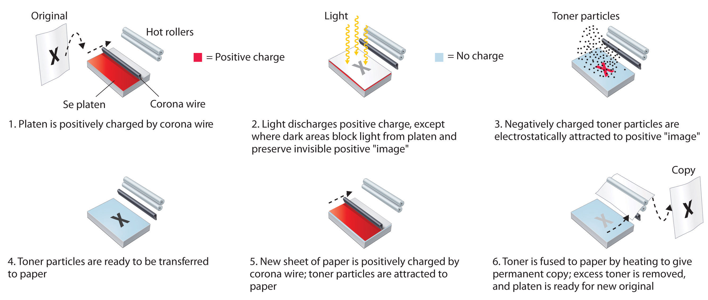Because amorphous selenium is a photosensitive semiconductor, exposing an electrostatically charged Se film to light causes the positive charge on the film to be discharged in all areas that are white in the original. Dark areas in the original block the light and generate an invisible, positively charged image. To produce an image on paper, negatively charged toner particles are attracted to the positive image, transferred to a negatively charged sheet of blank paper, and fused with the paper at high temperature to give a permanent image.
The heaviest chalcogen, polonium, was isolated after an extraordinary effort by Marie Curie. (For more information on radioactivity and polonium, see Chapter 1 "Introduction to Chemistry", Section 1.5 "The Atom".) Although she was never able to obtain macroscopic quantities of the element, which she named for her native country of Poland, she demonstrated that its chemistry required it to be assigned to group 16. Marie Curie was awarded a second Nobel Prize in Chemistry in 1911 for the discovery of radium and polonium.
Oxygen is by far the most abundant element in Earth’s crust and in the hydrosphere (about 44% and 86% by mass, respectively). The same process that is used to obtain nitrogen from the atmosphere produces pure oxygen. Oxygen can also be obtained by the electrolysis of water, the decomposition of alkali metal or alkaline earth peroxides or superoxides, or the thermal decomposition of simple inorganic salts, such as potassium chlorate in the presence of a catalytic amount of MnO2:
Equation 22.33
(For more information on electrolysis, see Chapter 19 "Electrochemistry". For more information on the alkali metals and the alkaline earth metals, see Chapter 21 "Periodic Trends and the ".)
Unlike oxygen, sulfur is not very abundant, but it is found as elemental sulfur in rock formations overlying salt domes, which often accompany petroleum deposits (Figure 2.22 "Top 25 Chemicals Produced in the United States in 2002*"). Sulfur is also recovered from H2S and organosulfur compounds in crude oil and coal and from metal sulfide ores such as pyrite (FeS2).
Pyrite (FeS2). Because of its lustrous golden yellow cubic crystals, FeS2 is sometimes mistaken for gold, giving rise to its common name “fool’s gold.” Real gold, however, is much denser than FeS2, and gold is soft and malleable rather than hard and brittle.
Because selenium and tellurium are chemically similar to sulfur, they are usually found as minor contaminants in metal sulfide ores and are typically recovered as by-products. Even so, they are as abundant in Earth’s crust as silver, palladium, and gold. One of the best sources of selenium and tellurium is the “slime” deposited during the electrolytic purification of copper. Both of these elements are notorious for the vile odors of many of their compounds. For example, when the body absorbs even trace amounts of tellurium, dimethyltellurium [(CH3)2Te] is produced and slowly released in the breath and perspiration, resulting in an intense garlic-like smell that is commonly called “tellurium breath.”
With their ns2np4 electron configurations, the chalcogens are two electrons short of a filled valence shell. Thus in reactions with metals, they tend to acquire two additional electrons to form compounds in the −2 oxidation state. This tendency is greatest for oxygen, the chalcogen with the highest electronegativity. The heavier, less electronegative chalcogens can lose either four np electrons or four np and two ns electrons to form compounds in the +4 and +6 oxidation state, respectively, as shown in Table 22.4 "Selected Properties of the Group 16 Elements". As with the other groups, the lightest member in the group, in this case oxygen, differs greatly from the others in size, ionization energy, electronegativity, and electron affinity, so its chemistry is unique. Also as in the other groups, the second and third members (sulfur and selenium) have similar properties because of shielding effects. Only polonium is metallic, forming either the hydrated Po2+ or Po4+ ion in aqueous solution, depending on conditions.
Table 22.4 Selected Properties of the Group 16 Elements
| Property | Oxygen | Sulfur | Selenium | Tellurium | Polonium |
|---|---|---|---|---|---|
| atomic symbol | O | S | Se | Te | Po |
| atomic number | 8 | 16 | 34 | 52 | 84 |
| atomic mass (amu) | 16.00 | 32.07 | 78.96 | 127.60 | 209 |
| valence electron configuration* | 2s22p4 | 3s23p4 | 4s24p4 | 5s25p4 | 6s26p4 |
| melting point/boiling point (°C) | −219/−183 | 115/445 | 221/685 | 450/988 | 254/962 |
| density (g/cm3) at 25°C | 1.31 | 2.07 | 4.81 | 6.24 | 9.20 |
| atomic radius (pm) | 48 | 88 | 103 | 123 | 135 |
| first ionization energy (kJ/mol) | 1314 | 1000 | 941 | 869 | 812 |
| normal oxidation state(s) | −2 | +6, +4, −2 | +6, +4, −2 | +6, +4, −2 | +2 (+4) |
| ionic radius (pm)† | 140 (−2) | 184 (−2), 29 (+6) | 198 (−2), 42 (+6) | 221 (−2), 56 (+6) | 230 (−2), 97 (+4) |
| electron affinity (kJ/mol) | −141 | −200 | −195 | −190 | −180 |
| electronegativity | 3.4 | 2.6 | 2.6 | 2.1 | 2.0 |
| standard reduction potential (E°, V) (E0 → H2E in acidic solution) | +1.23 | +0.14 | −0.40 | −0.79 | −1.00 |
| product of reaction with O2 | — | SO2 | SeO2 | TeO2 | PoO2 |
| type of oxide | — | acidic | acidic | amphoteric | basic |
| product of reaction with N2 | NO, NO2 | none | none | none | none |
| product of reaction with X2 | O2F2 | SF6, S2Cl2, S2Br2 | SeF6, SeX4 | TeF6, TeX4 | PoF4, PoCl2, PoBr2 |
| product of reaction with H2 | H2O | H2S | H2Se | none | none |
| *The configuration shown does not include filled d and f subshells. | |||||
| †The values cited for the hexacations are for six-coordinate ions and are only estimated values. | |||||
As in groups 14 and 15, the lightest group 16 member has the greatest tendency to form multiple bonds. Thus elemental oxygen is found in nature as a diatomic gas that contains a net double bond: O=O. As with nitrogen, electrostatic repulsion between lone pairs of electrons on adjacent atoms prevents oxygen from forming stable catenated compounds. In fact, except for O2, all compounds that contain O–O bonds are potentially explosive. Ozone, peroxides, and superoxides are all potentially dangerous in pure form. Ozone (O3), one of the most powerful oxidants known, is used to purify drinking water because it does not produce the characteristic taste associated with chlorinated water. Hydrogen peroxide (H2O2) is so thermodynamically unstable that it has a tendency to undergo explosive decomposition when impure:
Equation 22.34
As in groups 14 and 15, the lightest element in group 16 has the greatest tendency to form multiple bonds.
Despite the strength of the O=O bond ( = 494 kJ/mol), O2 is extremely reactive, reacting directly with nearly all other elements except the noble gases. Some properties of O2 and related species, such as the peroxide and superoxide ions, are in Table 22.5 "Some Properties of O". With few exceptions, the chemistry of oxygen is restricted to negative oxidation states because of its high electronegativity (χ = 3.4). Unlike the other chalcogens, oxygen does not form compounds in the +4 or +6 oxidation state. Oxygen is second only to fluorine in its ability to stabilize high oxidation states of metals in both ionic and covalent compounds. For example, AgO is a stable solid that contains silver in the unusual Ag(II) state, whereas OsO4 is a volatile solid that contains Os(VIII). Because oxygen is so electronegative, the O–H bond is highly polar, creating a large bond dipole moment that makes hydrogen bonding much more important for compounds of oxygen than for similar compounds of the other chalcogens.
Table 22.5 Some Properties of O2 and Related Diatomic Species
| Species | Bond Order | Number of Unpaired e− | O–O Distance (pm)* |
|---|---|---|---|
| O2+ | 2.5 | 1 | 112 |
| O2 | 2 | 2 | 121 |
| O2− | 1.5 | 1 | 133 |
| O22− | 1 | 0 | 149 |
| *Source of data: Lauri Vaska, “Dioxygen-Metal Complexes: Toward a Unified View,” Accounts of Chemical Research 9 (1976): 175. | |||
Metal oxides are usually basic, and nonmetal oxides are acidic, whereas oxides of elements that lie on or near the diagonal band of semimetals are generally amphoteric. A few oxides, such as CO and PbO2, are neutral and do not react with water, aqueous acid, or aqueous base. Nonmetal oxides are typically covalent compounds in which the bonds between oxygen and the nonmetal are polarized (Eδ+–Oδ−). Consequently, a lone pair of electrons on a water molecule can attack the partially positively charged E atom to eventually form an oxoacid. An example is reacting sulfur trioxide with water to form sulfuric acid:
Equation 22.35
H2O(l) + SO3(g) → H2SO4(aq)The oxides of the semimetals and of elements such as Al that lie near the metal/nonmetal dividing line are amphoteric, as we expect:
Equation 22.36
Al2O3(s) + 6H+(aq) → 2Al3+(aq) + 3H2O(l)Equation 22.37
Al2O3(s) + 2OH−(aq) + 3H2O(l) → 2Al(OH)4−(aq)Oxides of metals tend to be basic, oxides of nonmetals tend to be acidic, and oxides of elements in or near the diagonal band of semimetals are generally amphoteric.
For each reaction, explain why the given products form.
Given: balanced chemical equations
Asked for: why the given products form
Strategy:
Classify the type of reaction. Using periodic trends in atomic properties, thermodynamics, and kinetics, explain why the observed reaction products form.
Solution:
Exercise
Predict the product(s) of each reaction and write a balanced chemical equation for each reaction.
Answer:
Because most of the heavier chalcogens (group 16) and pnicogens (group 15) are nonmetals, they often form similar compounds. For example, both third-period elements of these groups (phosphorus and sulfur) form catenated compounds and form multiple allotropes. Consistent with periodic trends, the tendency to catenate decreases as we go down the column.
Sulfur and selenium both form a fairly extensive series of catenated species. For example, elemental sulfur forms S8 rings packed together in a complex “crankshaft” arrangement (Figure 18.15 "Two Forms of Elemental Sulfur and a Thermodynamic Cycle Showing the Transition from One to the Other"), and molten sulfur contains long chains of sulfur atoms connected by S–S bonds. Moreover, both sulfur and selenium form polysulfides (Sn2−) and polyselenides (Sen2−), with n ≤ 6. The only stable allotrope of tellurium is a silvery white substance whose properties and structure are similar to those of one of the selenium allotropes. Polonium, in contrast, shows no tendency to form catenated compounds. The striking decrease in structural complexity from sulfur to polonium is consistent with the decrease in the strength of single bonds and the increase in metallic character as we go down the group.
As in group 15, the reactivity of elements in group 16 decreases from lightest to heaviest. For example, selenium and tellurium react with most elements but not as readily as sulfur does. As expected for nonmetals, sulfur, selenium, and tellurium do not react with water, aqueous acid, or aqueous base, but all dissolve in strongly oxidizing acids such as HNO3 to form oxoacids such as H2SO4. In contrast to the other chalcogens, polonium behaves like a metal, dissolving in dilute HCl to form solutions that contain the Po2+ ion.
Just as with the other groups, the tendency to catenate, the strength of single bonds, and reactivity decrease down the group.
Fluorine reacts directly with all chalcogens except oxygen to produce the hexafluorides (YF6), which are extraordinarily stable and unreactive compounds. Four additional stable fluorides of sulfur are known; thus sulfur oxidation states range from +1 to +6 (Figure 22.13 "The Structures of the Known Fluorides of Sulfur"). In contrast, only four fluorides of selenium (SeF6, SeF4, FSeSeF, and SeSeF2) and only three of tellurium (TeF4, TeF6, and Te2F10) are known.
Figure 22.13 The Structures of the Known Fluorides of Sulfur
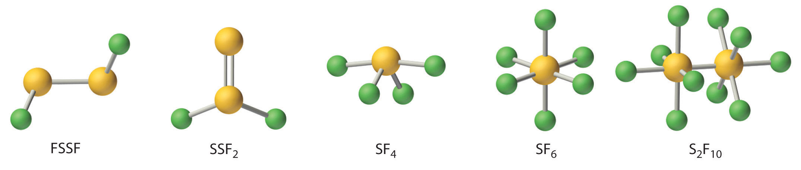Five stable sulfur fluorides are known, containing sulfur in oxidation states ranging from +1 to +6. All are volatile molecular compounds that vary tremendously in stability and toxicity. Although both SF6 and S2F10 are very stable, S2F10 is toxic and SF6 is not. The other three are highly reactive substances.
Direct reaction of the heavier chalcogens with oxygen at elevated temperatures gives the dioxides (YO2), which exhibit a dramatic range of structures and properties. The dioxides become increasingly metallic in character down the group, as expected, and the coordination number of the chalcogen steadily increases. Thus SO2 is a gas that contains V-shaped molecules (as predicted by the valence-shell electron-pair repulsion model), SeO2 is a white solid with an infinite chain structure (each Se is three coordinate), TeO2 is a light yellow solid with a network structure in which each Te atom is four coordinate, and PoO2 is a yellow ionic solid in which each Po4+ ion is eight coordinate.
The dioxides of sulfur, selenium, and tellurium react with water to produce the weak, diprotic oxoacids (H2YO3—sulfurous, selenous, and tellurous acid, respectively). Both sulfuric acid and selenic acid (H2SeO4) are strong acids, but telluric acid [Te(OH)6] is quite different. Because tellurium is larger than either sulfur or selenium, it forms weaker π bonds to oxygen. As a result, the most stable structure for telluric acid is Te(OH)6, with six Te–OH bonds rather than Te=O bonds. Telluric acid therefore behaves like a weak triprotic acid in aqueous solution, successively losing the hydrogen atoms bound to three of the oxygen atoms. As expected for compounds that contain elements in their highest accessible oxidation state (+6 in this case), sulfuric, selenic, and telluric acids are oxidants. Because the stability of the highest oxidation state decreases with increasing atomic number, telluric acid is a stronger oxidant than sulfuric acid.
The stability of the highest oxidation state of the chalcogens decreases down the column.
Sulfur and, to a lesser extent, selenium react with carbon to form an extensive series of compounds that are structurally similar to their oxygen analogues. For example, CS2 and CSe2 are both volatile liquids that contain C=S or C=Se bonds and have the same linear structure as CO2. Because these double bonds are significantly weaker than the C=O bond, however, CS2, CSe2, and related compounds are less stable and more reactive than their oxygen analogues. The chalcogens also react directly with nearly all metals to form compounds with a wide range of stoichiometries and a variety of structures. Metal chalcogenides can contain either the simple chalcogenide ion (Y2−), as in Na2S and FeS, or polychalcogenide ions (Yn2−), as in FeS2 and Na2S5.
The dioxides of the group 16 elements become increasingly basic, and the coordination number of the chalcogen steadily increases down the group.
Ionic chalcogenides like Na2S react with aqueous acid to produce binary hydrides such as hydrogen sulfide (H2S). Because the strength of the Y–H bond decreases with increasing atomic radius, the stability of the binary hydrides decreases rapidly down the group. It is perhaps surprising that hydrogen sulfide, with its familiar rotten-egg smell, is much more toxic than hydrogen cyanide (HCN), the gas used to execute prisoners in the “gas chamber.” Hydrogen sulfide at relatively low concentrations deadens the olfactory receptors in the nose, which allows it to reach toxic levels without detection and makes it especially dangerous.
For each reaction, explain why the given product forms or no reaction occurs.
Given: balanced chemical equations
Asked for: why the given products (or no products) form
Strategy:
Classify the type of reaction. Using periodic trends in atomic properties, thermodynamics, and kinetics, explain why the reaction products form or why no reaction occurs.
Solution:
One of the reactants (Cl2) is an oxidant. If the other reactant can be oxidized, then a redox reaction is likely. Sulfur dioxide contains sulfur in the +4 oxidation state, which is 2 less than its maximum oxidation state. Sulfur dioxide is also known to be a mild reducing agent in aqueous solution, producing sulfuric acid as the oxidation product. Hence a redox reaction is probable. The simplest reaction is the formation of SO2Cl2 (sulfuryl chloride), which is a tetrahedral species with two S–Cl and two S=O bonds.
Exercise
Predict the products of each reaction and write a balanced chemical equation for each reaction.
Answer:
Because the electronegativity of the chalcogens decreases down the group, so does their tendency to acquire two electrons to form compounds in the −2 oxidation state. The lightest member, oxygen, has the greatest tendency to form multiple bonds with other elements. It does not form stable catenated compounds, however, due to repulsions between lone pairs of electrons on adjacent atoms. Because of its high electronegativity, the chemistry of oxygen is generally restricted to compounds in which it has a negative oxidation state, and its bonds to other elements tend to be highly polar. Metal oxides are usually basic, and nonmetal oxides are acidic, whereas oxides of elements along the dividing line between metals and nonmetals are amphoteric. The reactivity, the strength of multiple bonds to oxygen, and the tendency to form catenated compounds all decrease down the group, whereas the maximum coordination numbers increase. Because Te=O bonds are comparatively weak, the most stable oxoacid of tellurium contains six Te–OH bonds. The stability of the highest oxidation state (+6) decreases down the group. Double bonds between S or Se and second-row atoms are weaker than the analogous C=O bonds because of reduced orbital overlap. The stability of the binary hydrides decreases down the group.
Unlike the other chalcogens, oxygen does not form compounds in the +4 or +6 oxidation state. Why?
Classify each oxide as basic, acidic, amphoteric, or neutral.
Classify each oxide as basic, acidic, amphoteric, or neutral.
Polarization of an oxide affects its solubility in acids or bases. Based on this, do you expect RuO2 to be an acidic, a basic, or a neutral oxide? Is the compound covalent? Justify your answers.
Arrange CrO3, Al2O3, Sc2O3, and BaO in order of increasing basicity.
As the atomic number of the group 16 elements increases, the complexity of their allotropes decreases. What factors account for this trend? Which chalcogen do you expect to polymerize the most readily? Why?
Arrange H3BO3, HIO4, and HNO2 in order of increasing acid strength.
Of OF2, SO2, P4O6, SiO2, and Al2O3, which is most ionic?
Of CO2, NO2, O2, SO2, Cl2O, H2O, NH3, and CH4, which do you expect to have the
Of Na2O2, MgO, Al2O3, and SiO2, which is most acidic?
Give an example of
The Si–O bond is shorter and stronger than expected. What orbitals are used in this bond? Do you expect Si to interact with Br in the same way? Why or why not?
Oxygen has the second highest electronegativity of any element; consequently, it prefers to share or accept electrons from other elements. Only with fluorine does oxygen form compounds in positive oxidation states.
CrO3 < Al2O3 < Sc2O3 < BaO
H3BO3 < HNO2 < HIO4
Most polar: H2O; least polar: O2
Considering its position in the periodic table, predict the following properties of selenium:
Using arguments based on electronegativity, explain why ZnO is amphoteric. What product would you expect when ZnO reacts with an aqueous
Write a balanced chemical equation for the reaction of sulfur with
Because the halogens are highly reactive, none is found in nature as the free element. Hydrochloric acid, which is a component of aqua regia (a mixture of HCl and HNO3 that dissolves gold), and the mineral fluorspar (CaF2) were well known to alchemists, who used them in their quest for gold. Despite their presence in familiar substances, none of the halogens was even recognized as an element until the 19th century.
Because the halogens are highly reactive, none is found in nature as the free element.
Chlorine was the first halogen to be obtained in pure form. In 1774, Carl Wilhelm Scheele (the codiscoverer of oxygen) produced chlorine by reacting hydrochloric acid with manganese dioxide. Scheele was convinced, however, that the pale green gas he collected over water was a compound of oxygen and hydrochloric acid. In 1811, Scheele’s “compound” was identified as a new element, named from the Greek chloros, meaning “yellowish green” (the same stem as in chlorophyll, the green pigment in plants). That same year, a French industrial chemist, Bernard Courtois, accidentally added too much sulfuric acid to the residue obtained from burned seaweed. A deep purple vapor was released, which had a biting aroma similar to that of Scheele’s “compound.” The purple substance was identified as a new element, named iodine from the Greek iodes, meaning “violet.” Bromine was discovered soon after by a young French chemist, Antoine Jérôme Balard, who isolated a deep red liquid with a strong chlorine-like odor from brine from the salt marshes near Montpellier in southern France. Because many of its properties were intermediate between those of chlorine and iodine, Balard initially thought he had isolated a compound of the two (perhaps ICl). He soon realized, however, that he had discovered a new element, which he named bromine from the Greek bromos, meaning “stench.” Currently, organic chlorine compounds, such as PVC (polyvinylchloride), consume about 70% of the Cl2 produced annually; organobromine compounds are used in much smaller quantities, primarily as fire retardants.
Because of the unique properties of its compounds, fluorine was believed to exist long before it was actually isolated. The mineral fluorspar (now called fluorite [CaF2]) had been used since the 16th century as a “flux,” a low-melting-point substance that could dissolve other minerals and ores. In 1670, a German glass cutter discovered that heating fluorspar with strong acid produced a solution that could etch glass. The solution was later recognized to contain the acid of a new element, which was named fluorine in 1812. Elemental fluorine proved to be very difficult to isolate, however, because both HF and F2 are extraordinarily reactive and toxic. After being poisoned three times while trying to isolate the element, the French chemist Henri Moissan succeeded in 1886 in electrolyzing a sample of KF in anhydrous HF to produce a pale green gas (Figure 22.14 "Isolation of Elemental Fluorine"). For this achievement, among others, Moissan narrowly defeated Mendeleev for the Nobel Prize in Chemistry in 1906. Large amounts of fluorine are now consumed in the production of cryolite (Na3AlF6), a key intermediate in the production of aluminum metal. Fluorine is also found in teeth as fluoroapatite [Ca5(PO4)3F], which is formed by reacting hydroxyapatite [Ca5(PO4)3OH] in tooth enamel with fluoride ions in toothpastes, rinses, and drinking water.

A crystal of the mineral fluorite (CaF2). The purple color of some fluorite crystals is due to small inclusions of highly oxidizing impurities, which generate detectable amounts of ozone when the crystals are crushed.
Figure 22.14 Isolation of Elemental Fluorine

The French chemist Henri Moissan was the first person to isolate elemental fluorine. A reproduction of the U-shaped electrolysis cell with which Moissan first isolated elemental fluorine in 1866 is shown with samples of cryolite (left) and fluorspar (right). Fluorspar is the raw material from which anhydrous hydrofluoric acid (HF) is prepared. Cryolite is a rare mineral that contains the fluoride ion.
The heaviest halogen is astatine (At), which is continuously produced by natural radioactive decay. All its isotopes are highly radioactive, and the most stable has a half-life of only about 8 h. Consequently, astatine is the least abundant naturally occurring element on Earth, with less than 30 g estimated to be present in Earth’s crust at any one time.
All the halogens except iodine are found in nature as salts of the halide ions (X−), so the methods used for preparing F2, Cl2, and Br2 all involve oxidizing the halide. Reacting CaF2 with concentrated sulfuric acid produces gaseous hydrogen fluoride:
Equation 22.38
CaF2(s) + H2SO4(l) → CaSO4(s) + 2HF(g)Fluorine is produced by the electrolysis of a 1:1 mixture of HF and K+HF2− at 60–300°C in an apparatus made of Monel, a highly corrosion-resistant nickel–copper alloy:
Equation 22.39
Fluorine is one of the most powerful oxidants known, and both F2 and HF are highly corrosive. Consequently, the production, storage, shipping, and handling of these gases pose major technical challenges.
Figure 22.15 A Subterranean Salt Mine

Subterranean deposits of rock salt are located worldwide, such as this one at Petralia in Sicily.
Although chlorine is significantly less abundant than fluorine, elemental chlorine is produced on an enormous scale. Fortunately, large subterranean deposits of rock salt (NaCl) are found around the world (Figure 22.15 "A Subterranean Salt Mine"), and seawater consists of about 2% NaCl by mass, providing an almost inexhaustible reserve. Inland salt lakes such as the Dead Sea and the Great Salt Lake are even richer sources, containing about 23% and 8% NaCl by mass, respectively. Chlorine is prepared industrially by the chloralkali process, which uses the following reaction:
Equation 22.40
Bromine is much less abundant than fluorine or chlorine, but it is easily recovered from seawater, which contains about 65 mg of Br− per liter. Salt lakes and underground brines are even richer sources; for example, the Dead Sea contains 4 g of Br− per liter. Iodine is the least abundant of the nonradioactive halogens, and it is a relatively rare element. Because of its low electronegativity, iodine tends to occur in nature in an oxidized form. Hence most commercially important deposits of iodine, such as those in the Chilean desert, are iodate salts such as Ca(IO3)2. The production of iodine from such deposits therefore requires reduction rather than oxidation. The process is typically carried out in two steps: reduction of iodate to iodide with sodium hydrogen sulfite, followed by reaction of iodide with additional iodate:
Equation 22.41
2IO3−(aq) + 6HSO3−(aq) → 2I−(aq) + 6SO42−(aq) + 6H+(aq)Equation 22.42
5I−(aq) + IO3−(aq) + 6H+(aq) → 3I2(s) + 3H2O(l)Because the halogens all have ns2np5 electron configurations, their chemistry is dominated by a tendency to accept an additional electron to form the closed-shell ion (X−). Only the electron affinity and the bond dissociation energy of fluorine differ significantly from the expected periodic trends shown in Table 22.6 "Selected Properties of the Group 17 Elements". Electron–electron repulsion is important in fluorine because of its small atomic volume, making the electron affinity of fluorine less than that of chlorine. Similarly, repulsions between electron pairs on adjacent atoms are responsible for the unexpectedly low F–F bond dissociation energy. (As discussed earlier, this effect is also responsible for the weakness of O–O, N–N, and N–O bonds.)
Oxidative strength decreases down group 17.
Electrostatic repulsions between lone pairs of electrons on adjacent atoms cause single bonds between N, O, and F to be weaker than expected.
Table 22.6 Selected Properties of the Group 17 Elements
| Property | Fluorine | Chlorine | Bromine | Iodine | Astatine |
|---|---|---|---|---|---|
| atomic symbol | F | Cl | Br | I | At |
| atomic number | 9 | 17 | 35 | 53 | 85 |
| atomic mass (amu) | 19.00 | 35.45 | 79.90 | 126.90 | 210 |
| valence electron configuration* | 2s22p5 | 3s23p5 | 4s24p5 | 5s25p5 | 6s26p5 |
| melting point/boiling point (°C) | −220/−188 | −102/−34.0 | −7.2/58.8 | 114/184 | 302/— |
| density (g/cm3) at 25°C | 1.55 | 2.90 | 3.10 | 4.93 | — |
| atomic radius (pm) | 42 | 79 | 94 | 115 | 127 |
| first ionization energy (kJ/mol) | 1681 | 1251 | 1140 | 1008 | 926 |
| normal oxidation state(s) | −1 | −1 (+1, +3, +5, +7) | −1 (+1, +3, +5, +7) | −1 (+1, +3, +5, +7) | −1, +1 |
| ionic radius (pm)† | 133 | 181 | 196 | 220 | — |
| electron affinity (kJ/mol) | −328 | −349 | −325 | −295 | −270 |
| electronegativity | 4.0 | 3.2 | 3.0 | 2.7 | 2.2 |
| standard reduction potential (E°, V) (X2 → X− in basic solution) | +2.87 | +1.36 | +1.07 | +0.54 | +0.30 |
| dissociation energy of X2(g) (kJ/mol) | 158.8 | 243.6 | 192.8 | 151.1 | ~80 |
| product of reaction with O2 | O2F2 | none | none | none | none |
| type of oxide | acidic | acidic | acidic | acidic | acidic |
| product of reaction with N2 | none | none | none | none | none |
| product of reaction with H2 | HF | HCl | HBr | HI | HAt |
| *The configuration shown does not include filled d and f subshells. | |||||
| †The values cited are for the six-coordinate anion (X−). | |||||
Because it is the most electronegative element in the periodic table, fluorine forms compounds in only the −1 oxidation state. Notice, however, that all the halogens except astatine have electronegativities greater than 2.5, making their chemistry exclusively that of nonmetals. The halogens all have relatively high ionization energies, but the energy required to remove electrons decreases substantially as we go down the column. Hence the heavier halogens also form compounds in positive oxidation states (+1, +3, +5, and +7), derived by the formal loss of ns and np electrons.
Because ionization energies decrease down the group, the heavier halogens form compounds in positive oxidation states (+1, +3, +5, and +7).
Fluorine is the most reactive element in the periodic table, forming compounds with every other element except helium, neon, and argon. The reactions of fluorine with most other elements range from vigorous to explosive; only O2, N2, and Kr react slowly. There are three reasons for the high reactivity of fluorine:
With highly electropositive elements, fluorine forms ionic compounds that contain the closed-shell F− ion. In contrast, with less electropositive elements (or with metals in very high oxidation states), fluorine forms covalent compounds that contain terminal F atoms, such as SF6. Because of its high electronegativity and 2s22p5 valence electron configuration, fluorine normally participates in only one electron-pair bond. Only a very strong Lewis acid, such as AlF3, can share a lone pair of electrons with a fluoride ion, forming AlF63−.
The halogens (X2) react with metals (M) according to the general equation
Equation 22.43
M(s,l) + nX2(s,l,g) → MXn(s,l)For elements that exhibit multiple oxidation states fluorine tends to produce the highest possible oxidation state and iodine the lowest. For example, vanadium reacts with the halogens to give VF5, VCl4, VBr4, and VI3.
Metal halides in the +1 or +2 oxidation state, such as CaF2, are typically ionic halides, which have high melting points and are often soluble in water. As the oxidation state of the metal increases, so does the covalent character of the halide due to polarization of the M–X bond. With its high electronegativity, fluoride is the least polarizable, and iodide, with the lowest electronegativity, is the most polarizable of the halogens. Halides of small trivalent metal ions such as Al3+ tend to be relatively covalent. For example, AlBr3 is a volatile solid that contains bromide-bridged Al2Br6 molecules. In contrast, the halides of larger trivalent metals, such as the lanthanides, are essentially ionic. For example, indium tribromide (InBr3) and lanthanide tribromide (LnBr3) are all high-melting-point solids that are quite soluble in water.
As the oxidation state of the metal increases, the covalent character of the corresponding metal halides also increases due to polarization of the M–X bond.
All halogens react vigorously with hydrogen to give the hydrogen halides (HX). Because the H–F bond in HF is highly polarized (Hδ+–Fδ−), liquid HF has extensive hydrogen bonds, giving it an unusually high boiling point and a high dielectric constant. As a result, liquid HF is a polar solvent that is similar in some ways to water and liquid ammonia; after a reaction, the products can be recovered simply by evaporating the HF solvent. (Hydrogen fluoride must be handled with extreme caution, however, because contact of HF with skin causes extraordinarily painful burns that are slow to heal.) Because fluoride has a high affinity for silicon, aqueous hydrofluoric acid is used to etch glass, dissolving SiO2 to give solutions of the stable SiF62− ion.

Glass etched with hydrogen flouride.
© Thinkstock
Except for fluorine, all the halogens react with water in a disproportionation reaction, where X is Cl, Br, or I:
Equation 22.44
X2(g,l,s) + H2O(l) → H+(aq) + X−(aq) + HOX(aq)The most stable oxoacids are the perhalic acids, which contain the halogens in their highest oxidation state (+7). The acid strengths of the oxoacids of the halogens increase with increasing oxidation state, whereas their stability and acid strength decrease down the group. Thus perchloric acid (HOClO3, usually written as HClO4) is a more potent acid and stronger oxidant than perbromic acid. Although all the oxoacids are strong oxidants, some, such as HClO4, react rather slowly at low temperatures. Consequently, mixtures of the halogen oxoacids or oxoanions with organic compounds are potentially explosive if they are heated or even agitated mechanically to initiate the reaction. Because of the danger of explosions, oxoacids and oxoanions of the halogens should never be allowed to come into contact with organic compounds.
Both the acid strength and the oxidizing power of the halogen oxoacids decrease down the group.
The halogens react with one another to produce interhalogen compounds, such as ICl3, BrF5, and IF7. In all cases, the heavier halogen, which has the lower electronegativity, is the central atom. The maximum oxidation state and the number of terminal halogens increase smoothly as the ionization energy of the central halogen decreases and the electronegativity of the terminal halogen increases. Thus depending on conditions, iodine reacts with the other halogens to form IFn (n = 1–7), ICl or ICl3, or IBr, whereas bromine reacts with fluorine to form only BrF, BrF3, and BrF5 but not BrF7. The interhalogen compounds are among the most powerful Lewis acids known, with a strong tendency to react with halide ions to give complexes with higher coordination numbers, such as the IF8− ion:
Equation 22.45
IF7(l) + KF(s) → KIF8(s)All group 17 elements form compounds in odd oxidation states (−1, +1, +3, +5, +7). The interhalogen compounds are also potent oxidants and strong fluorinating agents; contact with organic materials or water can result in an explosion.
All group 17 elements form compounds in odd oxidation states (−1, +1, +3, +5, +7), but the importance of the higher oxidation states generally decreases down the group.
For each reaction, explain why the given products form.
Given: balanced chemical equations
Asked for: why the given products form
Strategy:
Classify the type of reaction. Using periodic trends in atomic properties, thermodynamics, and kinetics, explain why the observed reaction products form.
Solution:
Exercise
Predict the products of each reaction and write a balanced chemical equation for each reaction.
Answer:
The halogens are so reactive that none is found in nature as the free element; instead, all but iodine are found as halide salts with the X− ion. Their chemistry is exclusively that of nonmetals. Consistent with periodic trends, ionization energies decrease down the group. Fluorine, the most reactive element in the periodic table, has a low F–F bond dissociation energy due to repulsions between lone pairs of electrons on adjacent atoms. Fluorine forms ionic compounds with electropositive elements and covalent compounds with less electropositive elements and metals in high oxidation states. All the halogens react with hydrogen to produce hydrogen halides. Except for F2, all react with water to form oxoacids, including the perhalic acids, which contain the halogens in their highest oxidation state. Halogens also form interhalogen compounds; the heavier halogen, with the lower electronegativity, is the central atom.
The lightest elements of groups 15, 16, and 17 form unusually weak single bonds. Why are their bonds so weak?
Fluorine has an anomalously low F–F bond energy. Why? Why does fluorine form compounds only in the −1 oxidation state, whereas the other halogens exist in multiple oxidation states?
Compare AlI3, InCl3, GaF3, and LaBr3 with respect to the type of M–X bond formed, melting point, and solubility in nonpolar solvents.
What are the formulas of the interhalogen compounds that will most likely contain the following species in the indicated oxidation states: I (+3), Cl (+3), I (−1), Br (+5)?
Consider this series of bromides: AlBr3, SiBr4, and PBr5. Does the ionic character of the bond between the Br atoms and the central atom decrease or increase in this series?
Chromium forms compounds in the +6, +3, and +2 oxidation states. Which halogen would you use to produce each oxidation state? Justify your selections.
Of ClF7, BrF5, IF7, BrF3, ICl3, IF3, and IF5, which one is least likely to exist? Justify your selection.
Electrostatic repulsions between lone pairs on adjacent atoms decrease bond strength.
Ionic character decreases as Δχ decreases from Al to P.
ClF7
SiF4 reacts easily with NaF to form SiF62−. In contrast, CF4 is totally inert and shows no tendency to form CF62− under even extreme conditions. Explain this difference.
Predict the products of each reaction and then balance each chemical equation.
Write a balanced chemical equation for the reaction of aqueous HF with
Oxyhalides of sulfur, such as the thionyl halides (SOX2, where X is F, Cl, or Br), are well known. Because the thionyl halides react vigorously with trace amounts of water, they are used for dehydrating hydrated metal salts. Write a balanced chemical equation to show the products of reaction of SOCl2 with water.
Write a balanced chemical equation describing each reaction.
Write the complete Lewis electron structure, the type of hybrid used by the central atom, and the number of lone pair electrons present on the central atom for each compound.
Carbon has no low energy d orbitals that can be used to form a set of d2sp3 hybrid orbitals. It is also so small that it is impossible for six fluorine atoms to fit around it at a distance that would allow for formation of strong C–F bonds.
The noble gases were all isolated for the first time within a period of only five years at the end of the 19th century. Their very existence was not suspected until the 18th century, when early work on the composition of air suggested that it contained small amounts of gases in addition to oxygen, nitrogen, carbon dioxide, and water vapor. Helium was the first of the noble gases to be identified, when the existence of this previously unknown element on the sun was demonstrated by new spectral lines seen during a solar eclipse in 1868. (For more information on spectroscopy, see Chapter 6 "The Structure of Atoms".) Actual samples of helium were not obtained until almost 30 years later, however. In the 1890s, the English physicist J. W. Strutt (Lord Rayleigh) carefully measured the density of the gas that remained after he had removed all O2, CO2, and water vapor from air and showed that this residual gas was slightly denser than pure N2 obtained by the thermal decomposition of ammonium nitrite. In 1894, he and the Scottish chemist William Ramsay announced the isolation of a new “substance” (not necessarily a new element) from the residual nitrogen gas. Because they could not force this substance to decompose or react with anything, they named it argon (Ar), from the Greek argos, meaning “lazy.” Because the measured molar mass of argon was 39.9 g/mol, Ramsay speculated that it was a member of a new group of elements located on the right side of the periodic table between the halogens and the alkali metals. He also suggested that these elements should have a preferred valence of 0, intermediate between the +1 of the alkali metals and the −1 of the halogens.
Lord Rayleigh was one of the few members of British higher nobility to be recognized as an outstanding scientist. Throughout his youth, his education was repeatedly interrupted by his frail health, and he was not expected to reach maturity. In 1861 he entered Trinity College, Cambridge, where he excelled at mathematics. A severe attack of rheumatic fever took him abroad, but in 1873 he succeeded to the barony and was compelled to devote his time to the management of his estates. After leaving the entire management to his younger brother, Lord Rayleigh was able to devote his time to science. He was a recipient of honorary science and law degrees from Cambridge University.
Born and educated in Glasgow, Scotland, Ramsay was expected to study for the Calvanist ministry. Instead, he became interested in chemistry while reading about the manufacture of gunpowder. Ramsay earned his PhD in organic chemistry at the University of Tübingen in Germany in 1872. When he returned to England, his interests turned first to physical chemistry and then to inorganic chemistry. He is best known for his work on the oxides of nitrogen and for the discovery of the noble gases with Lord Rayleigh.
In 1895, Ramsey was able to obtain a terrestrial sample of helium for the first time. Then, in a single year (1898), he discovered the next three noble gases: krypton (Kr), from the Greek kryptos, meaning “hidden,” was identified by its orange and green emission lines; neon (Ne), from the Greek neos, meaning “new,” had bright red emission lines; and xenon (Xe), from the Greek xenos, meaning “strange,” had deep blue emission lines. The last noble gas was discovered in 1900 by the German chemist Friedrich Dorn, who was investigating radioactivity in the air around the newly discovered radioactive elements radium and polonium. The element was named radon (Rn), and Ramsay succeeded in obtaining enough radon in 1908 to measure its density (and thus its atomic mass). For their discovery of the noble gases, Rayleigh was awarded the Nobel Prize in Physics and Ramsay the Nobel Prize in Chemistry in 1904. Because helium has the lowest boiling point of any substance known (4.2 K), it is used primarily as a cryogenic liquid. Helium and argon are both much less soluble in water (and therefore in blood) than N2, so scuba divers often use gas mixtures that contain these gases, rather than N2, to minimize the likelihood of the “bends,” the painful and potentially fatal formation of bubbles of N2(g) that can occur when a diver returns to the surface too rapidly.
Fractional distillation of liquid air is the only source of all the noble gases except helium. Although helium is the second most abundant element in the universe (after hydrogen), the helium originally present in Earth’s atmosphere was lost into space long ago because of its low molecular mass and resulting high mean velocity. Natural gas often contains relatively high concentrations of helium (up to 7%), however, and it is the only practical terrestrial source.
The elements of group 18 all have closed-shell valence electron configurations, either ns2np6 or 1s2 for He. Consistent with periodic trends in atomic properties, these elements have high ionization energies that decrease smoothly down the group. From their electron affinities, the data in Table 22.7 "Selected Properties of the Group 18 Elements" indicate that the noble gases are unlikely to form compounds in negative oxidation states. A potent oxidant is needed to oxidize noble gases and form compounds in positive oxidation states. Like the heavier halogens, xenon and perhaps krypton should form covalent compounds with F, O, and possibly Cl, in which they have even formal oxidation states (+2, +4, +6, and possibly +8). These predictions actually summarize the chemistry observed for these elements.
Table 22.7 Selected Properties of the Group 18 Elements
| Property | Helium | Neon | Argon | Krypton | Xenon | Radon |
|---|---|---|---|---|---|---|
| atomic symbol | He | Ne | Ar | Kr | Xe | Rn |
| atomic number | 2 | 10 | 18 | 36 | 54 | 86 |
| atomic mass (amu) | 4.00 | 20.18 | 39.95 | 83.80 | 131.29 | 222 |
| valence electron configuration* | 1s2 | 2s22p6 | 3s23p6 | 4s24p6 | 5s25p6 | 6s26p6 |
| triple point/boiling point (°C) | —/−269† | −249 (at 43 kPa)/−246 | −189 (at 69 kPa)/−189 | −157/−153 | −112 (at 81.6 kPa)/−108 | −71/−62 |
| density (g/L) at 25°C | 0.16 | 0.83 | 1.63 | 3.43 | 5.37 | 9.07 |
| atomic radius (pm) | 31 | 38 | 71 | 88 | 108 | 120 |
| first ionization energy (kJ/mol) | 2372 | 2081 | 1521 | 1351 | 1170 | 1037 |
| normal oxidation state(s) | 0 | 0 | 0 | 0 (+2) | 0 (+2, +4, +6, +8) | 0 (+2) |
| electron affinity (kJ/mol) | > 0 | > 0 | > 0 | > 0 | > 0 | > 0 |
| electronegativity | — | — | — | — | 2.6 | — |
| product of reaction with O2 | none | none | none | none | none | none |
| type of oxide | — | — | — | — | acidic | — |
| product of reaction with N2 | none | none | none | none | none | none |
| product of reaction with X2 | none | none | none | KrF2 | XeF2, XeF4, XeF6 | RnF2 |
| product of reaction with H2 | none | none | none | none | none | none |
| *The configuration shown does not include filled d and f subshells. | ||||||
| †This is the normal boiling point of He. Solid He does not exist at 1 atm pressure, so no melting point can be given. | ||||||
For many years, it was thought that the only compounds the noble gases could form were clathrates. Clathrates are solid compounds in which a gas, the guest, occupies holes in a lattice formed by a less volatile, chemically dissimilar substance, the host (Figure 22.16 "The Structure of Xenon Hydrate, a Clathrate"). Because clathrate formation does not involve the formation of chemical bonds between the guest (Xe) and the host molecules (H2O, in the case of xenon hydrate), the guest molecules are immediately released when the clathrate is melted or dissolved. In addition to the noble gases, many other species form stable clathrates. One of the most interesting is methane hydrate, large deposits of which occur naturally at the bottom of the oceans. It is estimated that the amount of methane in such deposits could have a major impact on the world’s energy needs later in this century.
Figure 22.16 The Structure of Xenon Hydrate, a Clathrate

Small gaseous atoms or molecules such as Xe or CH4 can occupy cavities in a lattice of hydrogen-bonded water molecules to produce a stable structure with a fixed stoichiometry (in this case, Xe·5.75H2O). (The hydrogen atoms of the water molecules have been omitted for clarity.) Warming the solid hydrate or decreasing the pressure of the gas causes it to collapse, with the evolution of gas and the formation of liquid water.

“Burning snowballs.” Like xenon, methane (CH4) forms a crystalline clathrate with water: methane hydrate. When the solid is warmed, methane is released and can be ignited to give what appears to be burning snow.
The widely held belief in the intrinsic lack of reactivity of the noble gases was challenged when Neil Bartlett, a British professor of chemistry at the University of British Columbia, showed that PtF6, a compound used in the Manhattan Project, could oxidize O2. Because the ionization energy of xenon (1170 kJ/mol) is actually lower than that of O2, Bartlett recognized that PtF6 should also be able to oxidize xenon. When he mixed colorless xenon gas with deep red PtF6 vapor, yellow-orange crystals immediately formed (Figure 22.17 "The Synthesis of the First Chemical Compound of Xenon"). Although Bartlett initially postulated that they were Xe+PtF6−, it is now generally agreed that the reaction also involves the transfer of a fluorine atom to xenon to give the XeF+ ion:
Equation 22.46
Xe(g) + PtF6(g) → [XeF+][PtF5−](s)Figure 22.17 The Synthesis of the First Chemical Compound of Xenon

(a) An apparatus containing platinum hexafluoride, the red vapor at the bottom left, and xenon, the colorless gas in the small tube at the upper right. (b) When the glass seal separating the two gases is broken and the gases are allowed to mix, a bright yellow solid is formed, which is best described as XeF+PtF5−.
Subsequent work showed that xenon reacts directly with fluorine under relatively mild conditions to give XeF2, XeF4, or XeF6, depending on conditions; one such reaction is as follows:
Equation 22.47
Xe(g) + 2F2(g) → XeF4(s)The ionization energies of helium, neon, and argon are so high (Table 22.7 "Selected Properties of the Group 18 Elements") that no stable compounds of these elements are known. The ionization energies of krypton and xenon are lower but still very high; consequently only highly electronegative elements (F, O, and Cl) can form stable compounds with xenon and krypton without being oxidized themselves. Xenon reacts directly with only two elements: F2 and Cl2. Although XeCl2 and KrF2 can be prepared directly from the elements, they are substantially less stable than the xenon fluorides.
The ionization energies of helium, neon, and argon are so high that no stable compounds of these elements are known.
Because halides of the noble gases are powerful oxidants and fluorinating agents, they decompose rapidly after contact with trace amounts of water, and they react violently with organic compounds or other reductants. The xenon fluorides are also Lewis acids; they react with the fluoride ion, the only Lewis base that is not oxidized immediately on contact, to form anionic complexes. For example, reacting cesium fluoride with XeF6 produces CsXeF7, which gives Cs2XeF8 when heated:
Equation 22.48
XeF6(s) + CsF(s) → CsXeF7(s)Equation 22.49
The XeF82− ion contains eight-coordinate xenon and has the square antiprismatic structure shown here, which is essentially identical to that of the IF8− ion. Cs2XeF8 is surprisingly stable for a polyatomic ion that contains xenon in the +6 oxidation state, decomposing only at temperatures greater than 300°C. Major factors in the stability of Cs2XeF8 are almost certainly the formation of a stable ionic lattice and the high coordination number of xenon, which protects the central atom from attack by other species. (Recall from Section 22.4 "The Elements of Group 16 (The Chalcogens)" that this latter effect is responsible for the extreme stability of SF6.)

For a previously “inert” gas, xenon has a surprisingly high affinity for oxygen, presumably because of π bonding between O and Xe. Consequently, xenon forms an extensive series of oxides and oxoanion salts. For example, hydrolysis of either XeF4 or XeF6 produces XeO3, an explosive white solid:
Equation 22.50
XeF6(aq) + 3H2O(l) → XeO3(aq) + 6HF(aq)Treating a solution of XeO3 with ozone, a strong oxidant, results in further oxidation of xenon to give either XeO4, a colorless, explosive gas, or the surprisingly stable perxenate ion (XeO64−), both of which contain xenon in its highest possible oxidation state (+8). The chemistry of the xenon halides and oxides is best understood by analogy to the corresponding compounds of iodine. For example, XeO3 is isoelectronic with the iodate ion (IO3−), and XeF82− is isoelectronic with the IF8− ion.
Xenon has a high affinity for both fluorine and oxygen.
Because the ionization energy of radon is less than that of xenon, in principle radon should be able to form an even greater variety of chemical compounds than xenon. Unfortunately, however, radon is so radioactive that its chemistry has not been extensively explored.
On a virtual planet similar to Earth, at least one isotope of radon is not radioactive. A scientist explored its chemistry and presented her major conclusions in a trailblazing paper on radon compounds, focusing on the kinds of compounds formed and their stoichiometries. Based on periodic trends, how did she summarize the chemistry of radon?
Given: nonradioactive isotope of radon
Asked for: summary of its chemistry
Strategy:
Based on the position of radon in the periodic table and periodic trends in atomic properties, thermodynamics, and kinetics, predict the most likely reactions and compounds of radon.
Solution:
We expect radon to be significantly easier to oxidize than xenon. Based on its position in the periodic table, however, we also expect its bonds to other atoms to be weaker than those formed by xenon. Radon should be more difficult to oxidize to its highest possible oxidation state (+8) than xenon because of the inert-pair effect. Consequently, radon should form an extensive series of fluorides, including RnF2, RnF4, RnF6, and possibly RnF8 (due to its large radius). The ion RnF82− should also exist. We expect radon to form a series of oxides similar to those of xenon, including RnO3 and possibly RnO4. The biggest surprise in radon chemistry is likely to be the existence of stable chlorides, such as RnCl2 and possibly even RnCl4.
Exercise
Predict the stoichiometry of the product formed by reacting XeF6 with a 1:1 stoichiometric amount of KF and propose a reasonable structure for the anion.
Answer: KXeF7; the xenon atom in XeF7− has 16 valence electrons, which according to the valence-shell electron-pair repulsion model could give either a square antiprismatic structure with one fluorine atom missing or a pentagonal bipyramid if the 5s2 electrons behave like an inert pair that does not participate in bonding.
The noble gases have a closed-shell valence electron configuration. The ionization energies of the noble gases decrease with increasing atomic number. Only highly electronegative elements can form stable compounds with the noble gases in positive oxidation states without being oxidized themselves. Xenon has a high affinity for both fluorine and oxygen, which form stable compounds that contain xenon in even oxidation states up to +8.
The chemistry of the noble gases is largely dictated by a balance between two competing properties. What are these properties? How do they affect the reactivity of these elements?
Of the group 18 elements, only krypton, xenon, and radon form stable compounds with other atoms and then only with very electronegative elements. Why?
Give the type of hybrid orbitals used by xenon in each species.
Which element is the least metallic—B, Ga, Tl, Pb, Ne, or Ge?
Of Br, N, Ar, Bi, Se, He, and S, which would you expect to form positive ions most easily? negative ions most easily?
Of BCl3, BCl4−, CH4, H3N·BF3, PCl3, PCl5, XeO3, H2O, and F−, which species do you expect to be
Of HCl, HClO4, HBr, H2S, HF, KrF2, and PH3, which is the strongest acid?
Of CF4, NH3, NF3, H2O, OF2, SiF4, H2S, XeF4, and SiH4, which is the strongest base?
Write a balanced chemical equation showing how you would prepare each compound from its elements and other common compounds.
Write a balanced chemical equation showing how you would make each compound.
In an effort to synthesize XeF6, a chemist passed fluorine gas through a glass tube containing xenon gas. However, the product was not the one expected. What was the actual product?
Write a balanced chemical equation to describe the reaction of each species with water.
Using heavy water (D2O) as the source of deuterium, how could you prepare each compound?
Predict the product(s) of each reaction and write a balanced chemical equation for each reaction.
SiF4; SiO2(s) + 2F2(g) → SiF4(l) + 2O2(g)
2Na(s) + 2D2O(l) → D2(g) + 2NaOD(aq)
2Li(s) + D2(g) → 2LiD(s)
4LiD(s) + AlCl3(soln) → LiAlD4(s) + 3LiCl(soln)
Borax (Na2B4O5(OH)4·8H2O) is used as a flux during welding operations. As brass is heated during welding, for example, borax cleans the surface of Cu2O and prevents further oxidation of the fused metal. Explain why borax is effective at cleaning the surface and preventing surface oxidation.
Extensive research is being conducted into using GaAs as a material for computer memory chips. It has been found, for example, that chips made from GaAs are up to 10 times faster than those made from silicon. Propose an explanation for this increase in speed.
Cement that has a high content of alumina (Al2O3) is particularly resistant to corrosion, so it is used for structures that must be resistant to seawater and acidic conditions. Why is this material so effective under these service conditions? Failure occurs under prolonged exposure to a hot, wet environment. Why?
Aluminum is light and ductile. If you were considering using aluminum rather than steel as a structural material for building a high-speed ferry, what disadvantages would you need to consider in using aluminum for these service conditions?
Life on Earth is based on carbon. A possible explanation is that no other element in the periodic table forms compounds that are so diverse in their chemistry and physical properties. Discuss the chemistry of carbon with regard to
Then compare B, Al, Si, N, and P with C in terms of these properties.
After a traffic accident in which a tanker truck carrying liquid nitrogen overturned, a reporter at the scene warned of a danger to residents in the vicinity of the accident because nitrogen would react with hydrocarbons in the asphalt to produce ammonia gas. Comment on the credibility of this statement.
Nitrogen forms a hydride called hydrazoic acid (HN3), which is a colorless, highly toxic, explosive substance that boils at 37°C. The thermal decomposition of one of its salts—NaN3—is used to inflate automotive air bags. The N3− ion is isoelectronic with CO2.
Hydrazine (N2H4), a rocket fuel, is a colorless, oily liquid with a melting point of 1.4°C, and it is a powerful reducing agent. The physical properties of hydrazine presumably reflect the presence of multiple hydrogen-bond acceptors and donors within a single molecule. Explain the basis for this statement.
Because the N–C bond is almost as strong as the N–H bond, organic analogues of ammonia, hydrazine, and hydroxylamine are stable and numerous. Conceptually at least, they are formed by the successive replacement of H atoms by alkyl or aryl groups. Methylhydrazine and dimethylhydrazine, for example, were used as fuels in the US Apollo space program. They react spontaneously and vigorously with liquid N2O4, thus eliminating the need for an ignition source. Write balanced chemical equations for these reactions and calculate ΔG° for each reaction.
In an effort to remove a troublesome stain from a sink, a member of the cleaning staff of a commercial building first used bleach on the stain and then decided to neutralize the bleach with ammonia. What happened? Why?
A slow reaction that occurs on the ocean floor is the conversion of carbonate to bicarbonate, which absorbs CO2. Write a balanced chemical equation for this reaction. Silicate sediments play an important role in controlling the pH of seawater. Given the reaction, propose a chemical explanation for this.
Marketing surveys have shown that customers prefer to buy a bright red steak rather than a dull gray one. It is known that NO combines with myoglobin to form a bright red NO complex. What would you add to beef during processing to ensure that this reaction occurs and yields the desired appearance?
Covalent azides are used as detonators and explosives. Ionic azides, in contrast, are usually much more stable and are used in dyestuffs. Why is there such a difference between these two types of compounds? The N3− ion is considered a pseudohalide. Why?
The heads of modern “strike anywhere” matches contain a mixture of a nonvolatile phosphorus sulfide (P4S3) and an oxidizing agent (KClO3), which is ignited by friction when the match is struck against a rough object. Safety matches separate the oxidant and the reductant by putting KClO3 in the head and a paste containing nonvolatile red phosphorus on the match box or cover. Write a balanced chemical equation for the reaction that occurs when a match is rubbed against the abrasive end of a matchbox.
Paris green was a common pigment in paints and wallpaper of the Napoleonic era. It is a mixed acetate/arsenite salt of copper with the formula Cu2(OAc)2(AsO3). In damp conditions, certain fungi are able to convert arsenite salts to volatile, toxic organoarsenic compounds. Shortly after his exile in 1815 to the remote island of St. Helena in the southern Atlantic Ocean, Napoleon died. As a forensic scientist investigating the cause of Napoleon’s mysterious death, you notice that the walls of his enclosed bedchamber are covered in green wallpaper. What chemical clues would you look for to determine the cause of his death?
Selenium, an element essential to humans, appears to function biologically in an enzyme that destroys peroxides. Why is selenium especially suited for this purpose? Would sulfur or tellurium be as effective? Why or why not?
One way to distinguish between fool’s gold (FeS2, or iron pyrite) and real gold is to heat the sample over a fire. If your sample of “gold” were actually fool’s gold, what would happen?
Calcium hypochlorite is sold as swimming pool bleach. It is formed by the hydrolysis of Cl2O, which gives only one product, followed by neutralization with lime [Ca(OH)2]. Write balanced chemical equations for these reactions.
There is much interest in the superheavy elements beyond Z = 111 because of their potentially unique properties. Predict the valence electron configurations, preferred oxidation states, and products of the reaction with aqueous acid for elements 113 and 115.
Zeolites have become increasingly important in chemical engineering. They can be used as desiccants because the dehydrated zeolite absorbs small molecules, such as water. To be retained by the zeolite frame, a molecule must satisfy two conditions. What are they? Why can linear CO2 and tetrahedral CH4 not be held by a typical zeolite, even though they can penetrate it easily?
Three resonance structures for the azide ion may be reasonably drawn:

Examine samples of Napoleon’s hair and/or fingernails from museums or collections to determine arsenic concentrations.
Upon heating, pyrite will react with oxygen to form SO2(g), which has a pungent smell.
Element 113: 5f146d107s27p1, +1, E+(aq); element 115: 5f146d107s27p3, +3, E3+(aq)